import re
import os
import pandas as pd
import nltk
import sys
import io
from IPython.display import display, HTML
from nltk import word_tokenize, pos_tag
from nltk.corpus import stopwords
from nltk.corpus import wordnet as wn
from nltk.stem import WordNetLemmatizer
from tqdm import tqdm
import re
import numpy as np
import matplotlib.pyplot as plt
from scipy import stats
from matplotlib_venn import venn3
import re
import html
import requests
_WIKI_API = "https://en.wiktionary.org/w/api.php"
LMT = WordNetLemmatizer()
nltk.download("punkt", quiet=True)
nltk.download("averaged_perceptron_tagger_eng", quiet=True)
nltk.download("wordnet", quiet=True)
nltk.download("omw-1.4", quiet=True)
nltk.download("stopwords", quiet=True)
# manually defined stopwords
CUSTOM_STOP_FROM_LIST = {
# abbrev / shorthands
"u","de","al","co","ed","fig","la","wa","ha","xx"
"xxiv", "lxx", "xxvii", "abcs",
"romans", "teens", "fifties", "sevens",
"thanks", "eats", "pursued"
}
# stopwords for definitions
STOP = set(stopwords.words("english"))
# custom stopwords for basic / non-basic wordlist, includes some words that I added manually (CUSTOM_STOP_FROM_LIST)
STOPWORDS = STOP | CUSTOM_STOP_FROM_LISTBasic-Word Paradox: Is Basic Vocabulary Harder to Define?
NB: it is very important to install ipywidgets; without that, the notebook won’t render properly.
Dictionaries define words using other words, often simpler or more frequent ones. Yet some highly frequent, conceptually fundamental words – like water or house – may be defined using rarer or more specialized vocabulary. This project examines the idea of a “Basic-Word Paradox”: that words most central to human experience might paradoxically require more complex dictionary definitions. In this project, I aim to explore this paradox by analyzing dictionary and lexical database entries of basic and non-basic words in terms of “basicness” – with a frequency-based definition.
1 Research question
Q: Do dictionary definitions of “basic” words differ systematically from those of “non-basic” words in terms of the frequency and length of the words used to define them?
H: I hypothesize that definitions of “basic” concepts should be longer and at the same time contain less frequent (i.e., less basic) words, reflecting their conceptual breadth and the limits of simple paraphrase.
2 Theoretical overview
Early attempts to identify conceptually fundamental vocabulary are found in historical-comparative linguistics, in particular, the Swadesh list of “core” terms proposed for lexicostatistical comparison across languages (Swadesh, 1952). While the method aimed to date language divergence, it also revealed that certain words are resistant to replacement, tentatively encoding concepts central to human communication and cognition.
In lexicography, the notion of lexical basicness is found in the principle of the defining vocabulary, used in learner-oriented dictionaries such as the Longman Dictionary of Contemporary English and the Oxford Learner’s Dictionaries. Under this policy, entries are paraphrased using a limited set of high-frequency, semantically transparent words, improving accessibility for readers and learners who might otherwise struggle with complex or specialized metalanguage (Kamiński, 2021). This practice assumes a limited “definition” lexicon, where some words function as primitives for defining others.
From a cognitive perspective, the idea of basicness aligns with the concept of basic-level categories – the level of abstraction at which humans most readily identify and name objects (e.g., chair rather than furniture or rocking chair) (Rosch et al., 1976). Basic-level terms tend to be more frequent, imageable, and semantically rich, reflecting their privileged status in mental representation.
Recent computational and psycholinguistic research extends this by quantifying lexical “fundamentality” through measurable properties, such as word frequency, concreteness, imageability, and age of acquisition (e.g., Brysbaert et al., 2014; Mandera et al., 2017). Corpus-based approaches show that high-frequency words occupy central positions in semantic networks (Steyvers and Tenenbaum, 2005).
Building on the earlier research, this study operationalizes basicness through frequency-based word lists and examines how it manifests in dictionary definitions by comparing the length- and frequency-based ease of definitions for basic versus non-basic words across multiple corpora.
3 Methodology
3.1 How to quantify “basicness” and “ease of definition”?
As I have demonstrated in the previous section, here is no one common definition of vocabulary “basicness”. I opt to follow the frequency-based definition and treat more frequently used words as more “basic” and less frequently used words as less “basic”. As a medium for the ease of definition, I consider 1) the number of words used in a definition; 2) mean and median frequency of these words. Words that are easier to define will have shorter definitions and the words used in their definitions will be more basic, i.e. more frequent.
To define basic and non-basic words as well as basic and non-basic definitions, I need a list of word frequencies. I decide not to limit the analysis to one source of information and take a look at frequencies obtained from three different corpora: Google Web Trillion Word Corpus, OpenSubtitles2018 corpus, 2020-02-17 Google Books Ngrams dataset (100 datatpoints for each corpus, each type).
3.2 Lexicographical sources for obtaining definitions
WordNet definitions are obtained via NLTK WordNet subpackage. While this subpackage is no longer developed as a standalone component, it is stable, fully functional, integrated into NLTK, and widely used in corpus-based linguistic research.
Wiktionary definitions are retrieved by parsing the corresponding page markup from en.wiktionary.org. Specifically, I extract the first English definition section for each lemma using regular expressions that match ==English== headers and definition lines (e.g., those starting with #).
3.3 Preprocessing and tokenization
For each corpus, the words were lemmatized using NLTK’s WordNetLemmatizer and the frequencies for different wordforms (e.g., do, did, and does) of the same lemma were aggregated.
Word frequencies were normalized as smoothed log-probabilities: each lemma’s count was divided by the total corpus count (with +0.5 smoothing) and converted to base-10 logarithms. This reduces the skew (otherwise, a few dominating high-frequency tokens would affect the result disproportionately) and ensures comparability across corpora.
All definitions were lowercased, tokenized using NLTK’s word_tokenize, and stripped of punctuation and stopwords. Numerical tokens were removed. Mean and median token frequencies were computed after aligning each definition word to its corpus frequency list (with aggregated frequencies for lemmas).
3.4 Statistical Testing
For each corpus, I compared “basic” vs “non-basic” sets using Welch’s two-sample t-test (unequal variances) and Mann–Whitney U as a robustness check. Effect sizes were quantified with Cohen’s d, and 95% confidence intervals were computed for mean differences. As the significance threshold, I considered the standard p<.05.
4 Preparation (collapse this section for better overview of the notebook text)
In the following section, I prepare everything necessary for the data analysis – imports, downloads, global variables and function definitions. I tried to document each function (see the docstring if there are any questions).
def has_pos(word: str, pos_tag) -> bool:
"""
True if the word only has at least one {POS} senses.
"""
return len(wn.synsets(word, pos=pos_tag)) > 0
def commonly_POS(word: str, pos=wn.NOUN) -> bool:
"""
True if the most-used SemCor sense is a {POS}.
If SemCor has zero counts for all senses (for rare words), optionally fall back to the old strict rule:
- has at least one {POS} sense
- and has NO senses other than {POS}
"""
w = str(word).strip().lower()
lemma_objs = wn.lemmas(w, pos=wn.NOUN) + wn.lemmas(w, pos=wn.VERB) + wn.lemmas(w, pos=wn.ADJ) + wn.lemmas(w, pos=wn.ADV)
if not lemma_objs:
return False
highest_count = max(lemma_objs, key=lambda L: L.count() or 0)
if highest_count:
return highest_count.synset().pos() == pos
# if SemCor has no counts, use pos-only rule
else:
others = {wn.VERB, wn.ADJ, wn.ADV, wn.NOUN} - pos
has_req = len(wn.synsets(w, pos=pos)) > 0
has_other = False
for other_pos in others:
has_other_check = len(wn.synsets(w, pos=other_pos)) > 0
has_other = has_other or has_other_check
return has_req and not has_other
def keep_token(token, pos=wn.NOUN, source="wordnet"):
"""
Keep token if it passes {POS} check (most-used SemCor sense is a {POS}) and is not a stopword and is longer than one character.
"""
with open("logging.txt", "a", encoding="utf-8") as f:
f.write(f"{token, pos, source}\n")
w = str(token).lower().strip()
if w in STOPWORDS or len(w) == 1:
return False
if pos:
return commonly_POS(w, pos=pos)
else:
if source=="wordnet":
return has_pos(w, pos_tag=None)
elif source=="wiktionary":
if has_pos(w, pos_tag=None):
definition = wiktionary_first_definition(token)
with open("logging.txt", "a", encoding="utf-8") as f:
f.write(f"{definition}\n")
if definition:
return len(definition) > 3
return False
def get_lemma(word, pos=wn.NOUN):
"""
Lemmatize to {POS} base form (singular) using WordNet.
If {POS} is not provided, use most common SemCor sense to determine part-of-speech.
"""
w = word.lower()
if pos == None:
for pos_tag in {wn.VERB, wn.ADJ, wn.ADV, wn.NOUN}:
_is_pos = commonly_POS(w, pos=pos_tag)
if _is_pos:
pos = pos_tag
break
else:
pos = wn.NOUN
return LMT.lemmatize(w, pos=pos)
def get_basic_and_nonbasic_terms(file_name="word_counts.csv",
merged_lemma_count_csv="merged_freqs.csv",
output_top_csv="top200_semcor.csv",
output_bottom_csv="bottom200_semcor.csv",
min_count=1,
top_n=200,
bottom_n=200,
pos=wn.NOUN,
source="wordnet"):
"""
Process the given frequency list to obtain {top_n} top and {bottom_n} bottom words that of part-of-speech {pos}.
Also, lemmatize words of given part-of-speech, merge their frequencies (e.g., sum frequencies for dog and dogs and report it as frequency for lemma "dog".
"""
if "csv" in file_name:
df = pd.read_csv(file_name)
elif "txt" in file_name:
df = pd.read_csv(file_name, sep='\t', header=None, names=['word', 'count_old', 'count'])
df["count"] = df["count"].astype(int)
df["word"] = df["word"].astype(str)
df = df[df["count"].astype(int) >= min_count].copy()
tqdm.pandas(desc="Lemmatizing", dynamic_ncols=True)
df["lemma"] = df["word"].progress_map(lambda x: get_lemma(x, pos=pos))
merged = (df.groupby("lemma", as_index=False)["count"]
.sum()
.sort_values("count", ascending=False)
.reset_index(drop=True))
merged.to_csv(merged_lemma_count_csv, index=False)
top_rows = []
for row in tqdm(merged.itertuples(index=False), desc="Getting top frequency words"):
if keep_token(row.lemma, pos=pos, source=source):
top_rows.append(row)
if len(top_rows) >= top_n:
break
nouns_top = pd.DataFrame(top_rows, columns=merged.columns)
nouns_top.to_csv(output_top_csv, index=False)
bottom_rows = []
for i in tqdm(range(len(merged) - 1, -1, -1), desc="Getting bottom frequency words"):
lemma = merged.at[i, "lemma"]
if keep_token(lemma, pos=pos, source=source):
bottom_rows.append(merged.iloc[i])
if len(bottom_rows) >= bottom_n:
break
nouns_bottom = pd.DataFrame(bottom_rows[::-1])
nouns_bottom.to_csv(output_bottom_csv, index=False)
# print(f"Collected top {len(nouns_top)} and bottom {len(nouns_bottom)} for {pos}")
# tqdm.pandas(desc="Filtering with SemCor/WordNet/Wiktionary", dynamic_ncols=True)
# mask = merged["lemma"].progress_map(lambda x: keep_token(x, pos=pos, source=source))
# nouns_df = merged[mask].reset_index(drop=True)
# # top N most frequent nouns
# nouns_top = nouns_df.head(top_n)
# nouns_top.to_csv(output_top_csv, index=False)
# # bottom N most frequent nouns (= least frequent)
# nouns_bottom = nouns_df.tail(bottom_n)
# nouns_bottom.to_csv(output_bottom_csv, index=False)
# print(f"Kept {len(nouns_df)} total words of part-of-speech {pos}")
# print(f"Merged lemma frequencies written to {merged_lemma_count_csv}")
# print(f"Top {top_n} written to {output_top_csv}")
# print(f"Bottom {bottom_n} written to {output_bottom_csv}")
def most_used_semcor_definition(word: str, pos: str | None=wn.NOUN) -> str | None:
"""
Return the WordNet definition (gloss) for the most-used SemCor synset.
- pos: 'n' / 'v' / 'a' (adj) / 'r' (adv) / None (all POS).
- If SemCor counts are all zero for the chosen POS, take the first sense.
"""
w = str(word).strip().lower()
if pos in {wn.NOUN, wn.VERB, wn.ADJ, wn.ADV}:
lemma_objs = wn.lemmas(w, pos=pos)
synsets = wn.synsets(w, pos=pos)
else:
lemma_objs = wn.lemmas(w, pos=wn.NOUN) + wn.lemmas(w, pos=wn.VERB) + wn.lemmas(w, pos=wn.ADJ) + wn.lemmas(w, pos=wn.ADV)
synsets = wn.synsets(w, pos=wn.NOUN) + wn.synsets(w, pos=wn.VERB) + wn.synsets(w, pos=wn.ADJ) + wn.synsets(w, pos=wn.ADV)
if not synsets:
return None
if lemma_objs:
best_lemma = max(lemma_objs, key=lambda L: L.count() or 0)
if any((L.count() or 0) > 0 for L in lemma_objs):
return best_lemma.synset().definition()
return synsets[0].definition()
def wiktionary_first_definition(word):
"""
Return the first definition line ('# ...') from the English Wiktionary page for `word`.
Ignores part of speech and just takes the earliest definition found in the language section.
Returns None if no definition is found.
"""
r = requests.get(
_WIKI_API,
params={
"action": "parse",
"page": word.strip(),
"prop": "wikitext",
"format": "json",
"redirects": 1,
},
headers={"User-Agent": "basic-words-research/1.0"},
timeout=15,
)
if r.status_code != 200:
return None
data = r.json()
wikitext = data.get("parse", {}).get("wikitext", {}).get("*", "")
if not wikitext:
return None
m = re.search(
rf"(?ms)^(?<!=)==\s*English\s*==(?!=)\s*(.*?)"
rf"(?=^(?<!=)==\s*[^=].*?==(?!=)|\Z)",
wikitext,
)
if not m:
return None
lang_text = m.group(1)
for line in lang_text.splitlines():
if re.match(r"^#\s(?![#*:;])", line):
text = line.lstrip("# ").strip()
text = html.unescape(text)
text = re.sub(r"\{\{[^{}]*\}\}", "", text)
text = re.sub(r"\[\[([^|\]]+)\|([^\]]+)\]\]", r"\2", text)
text = re.sub(r"\[\[([^\]]+)\]\]", r"\1", text)
text = text.replace("''", "")
text = re.sub(r"<[^>]+>", "", text)
text = re.sub(r"\s+", " ", text).strip(" ;:—–-")
return text
def write_most_used_definitions_csv(input_csv: str,
output_csv: str,
pos: str | None = wn.NOUN,
source="wordnet"):
"""
Obtain the definition for the most-used SemCor synset (should correspond to the most widely used sense of the words) for each word in the file.
"""
df = pd.read_csv(input_csv)
lemmas = (df["lemma"].astype(str))
counts = (df["count"].astype(int))
rows = []
for lemma, count in tqdm(zip(lemmas, counts), desc="Obtaining definitions"):
if source =="wordnet":
definition = most_used_semcor_definition(lemma, pos=pos)
elif source =="wiktionary":
definition = wiktionary_first_definition(lemma)
else:
definition = None
if definition is not None:
rows.append({"lemma": lemma, "definition": definition, "count": count})
pd.DataFrame(rows).to_csv(output_csv, index=False)
# print(f"Wrote {len(rows)} rows to {output_csv}")
def nltk_pos_to_wn(pos: str):
"""
Map NLTK parts of speech to WordNet ones.
"""
if pos.startswith("N"): return wn.NOUN
if pos.startswith("V"): return wn.VERB
if pos.startswith("J"): return wn.ADJ
if pos.startswith("R"): return wn.ADV
return None
def def_to_content_lemmas(def_text: str):
"""
Lemmatize word definitions; filter out stopwords and non-word tokens (that contain anything but alphabatecial characters and hyphen).
Lemmatization occurs according to the part-of-speech defined by NLTK POS-tagging.
"""
toks = [t.lower() for t in word_tokenize(str(def_text))]
toks = [t for t in toks if re.fullmatch(r"[a-z][a-z'-]*", t)]
toks = [t for t in toks if t not in STOP and len(t) > 1]
# NLTK POS-tagging takes context into account
tagged = pos_tag(toks)
lemmas = []
for w, p in tagged:
wn_pos = nltk_pos_to_wn(p)
if wn_pos in {"n", "v", "a", "r"}:
lemmas.append(LMT.lemmatize(w, pos=wn_pos))
return lemmas
def attach_definition_frequencies(input_csv: str,
output_csv: str = "defs_with_freq.csv",
freq_csv: str = "merged_freq.csv"):
"""
Read input CSV with columns [lemma, definition, count], clean and lemmatize definitions,
map each token to its frequencies, and write metrics:
- len_tokens: number of content lemmas in the definition
- mean_log_freq: mean log10 probability based on counts from freq_csv
- median_log_freq: median log10 probability
- miss_rate: fraction of definition lemmas missing from freq table
"""
freq_df = pd.read_csv(freq_csv)
freq_df["lemma"] = freq_df["lemma"].astype(str)
agg = freq_df.groupby("lemma", as_index=False)["count"].sum()
total = float(agg["count"].sum())
agg["log10p"] = np.log10((agg["count"] + 0.5) / (total + 0.5 * len(agg)))
freq_lookup = dict(zip(agg["lemma"], agg["log10p"]))
df = pd.read_csv(input_csv)
out_rows = []
for i, row in df.iterrows():
definition = str(row["definition"])
lemmas = def_to_content_lemmas(definition)
if len(lemmas) == 0:
out_rows.append({
"lemma": row["lemma"],
"definition": definition,
"len_tokens": 0,
"mean_log_freq": np.nan,
"median_log_freq": np.nan,
"miss_rate": 1.0
})
continue
vals = [freq_lookup.get(l, np.nan) for l in lemmas]
present = [v for v in vals if not np.isnan(v)]
miss_rate = 1.0 - (len(present) / len(lemmas))
if not len(present):
mean_log = np.nan
median_log = np.nan
else:
arr = np.array(present, dtype=float)
mean_log = float(arr.mean())
median_log = float(np.median(arr))
out_rows.append({
"lemma": row["lemma"],
"definition": definition,
"len_tokens": len(lemmas),
"mean_log_freq": mean_log,
"median_log_freq": median_log,
"miss_rate": miss_rate
})
out_df = pd.DataFrame(out_rows)
out_df.to_csv(output_csv, index=False)
# print(f"Wrote {len(out_df)} rows to {output_csv}")
def t_tests_on_definition(basic_csv: str, nonbasic_csv: str, value_col: str = "mean_log_freq"):
"""
Performs statistical analysis on the results; determines whether the difference between results for basic and non-basic wordlists is statistically significant.
"""
basic = pd.read_csv(basic_csv)
non = pd.read_csv(nonbasic_csv)
gb = basic[value_col].astype(float).replace([np.inf, -np.inf], np.nan).dropna()
gn = non[value_col].astype(float).replace([np.inf, -np.inf], np.nan).dropna()
nb, nn = len(gb), len(gn)
mb, mn = gb.mean(), gn.mean()
sb, sn = gb.std(ddof=1), gn.std(ddof=1)
# Welch's t-test (unequal variances)
tstat, pval = stats.ttest_ind(gb, gn, equal_var=False)
# Cohen's d (pooled SD with ddof=1)
def cohens_d(a, b):
a, b = np.asarray(a), np.asarray(b)
sa, sb = a.std(ddof=1), b.std(ddof=1)
sp = np.sqrt(((len(a)-1)*sa**2 + (len(b)-1)*sb**2) / (len(a)+len(b)-2))
return (a.mean() - b.mean()) / sp
d = cohens_d(gb, gn)
# Mann–Whitney U
u, p_u = stats.mannwhitneyu(gb, gn, alternative="two-sided")
# print(f"Samples: basic n={nb}, nonbasic n={nn}")
print(f"Basic={mb:.4f} (+-{sb:.4f}), nonbasic={mn:.4f}(+-{sn:.4f})")
print("\nWelch's t-test (unequal variances)")
print(f"t = {tstat:.3f}, p = {pval:.3g}")
print(f"\nCohen's d = {d:.3f} (positive ⇒ basic > nonbasic)")
print("\nMann-Whitney U (robustness)")
print(f"U = {u:.0f}, p = {p_u:.3g}")
# 95% CI
diff = mb - mn
se = np.sqrt(sb**2/nb + sn**2/nn)
df = (sb**2/nb + sn**2/nn)**2 / ((sb**2/nb)**2/(nb-1) + (sn**2/nn)**2/(nn-1))
tcrit = stats.t.ppf(0.975, df)
lo, hi = diff - tcrit*se, diff + tcrit*se
print(f"\n95% CI for (basic - nonbasic) mean difference: [{lo:.4f}, {hi:.4f}]")
def plot_violin_pairs(
pairs,
value_col="mean_log_freq",
pair_labels=None,
transform="yes",
yscale="log",
title="Group comparison",
):
data = []
for b_csv, n_csv in pairs:
b = pd.read_csv(b_csv)[value_col].astype(float).replace([np.inf,-np.inf], np.nan).dropna().values
n = pd.read_csv(n_csv)[value_col].astype(float).replace([np.inf,-np.inf], np.nan).dropna().values
if transform == "yes":
b_plot = (10**b) * 1_000_000.0
n_plot = (10**n) * 1_000_000.0
else:
b_plot, n_plot = b, n
data.append((b, n, b_plot, n_plot))
if pair_labels is None:
pair_labels = [f"Set {i+1}" for i in range(len(data))]
fig, axes = plt.subplots(1, len(data), figsize=(4*len(data), 4.5), dpi=150, sharey=True)
if len(data) == 1:
axes = [axes]
for ax, (lbl, (b_log, n_log, b_plot, n_plot)) in zip(axes, zip(pair_labels, data)):
ax.violinplot([b_plot, n_plot], positions=[1,2], showmeans=False, showmedians=False, showextrema=True)
med_b, med_n = np.median(b_plot), np.median(n_plot)
ax.hlines([med_b, med_n], [0.85, 1.85], [1.15, 2.15], colors="blue", linewidth=1, label="Median")
if transform == "yes":
g_b = 10**(b_log.mean()) * 1000000
g_n = 10**(n_log.mean()) * 1000000
ax.hlines([g_b, g_n], [0.85, 1.85], [1.15, 2.15], colors="orange", linewidth=1, label="Geometric mean")
ax.set_yscale(yscale)
ax.set_xticks([1,2]); ax.set_xticklabels(["Basic","Non-basic"])
ax.set_title(lbl)
ax.grid(axis='y', which='both', linestyle=':', linewidth=0.6, alpha=0.7)
a_b, a_n = b_plot.mean(), n_plot.mean()
# print(a_b, a_n)
ax.hlines([a_b, a_n], [0.85, 1.85], [1.15, 2.15], colors="black", linewidth=1, linestyle="--", label="Arithmetic mean")
fig.supylabel("Mean length" if transform is None else ("Frequency per million" + (" (log scale)" if yscale=="log" else "")))
fig.suptitle(title, y=1.02, fontsize=11)
handles, labels = axes[0].get_legend_handles_labels()
if handles:
fig.legend(handles, labels, loc="upper right", frameon=False, fontsize=8)
fig.tight_layout()
plt.show()
def capture_function_output(func, *args, **kwargs):
"""Capture print output from a function. This function is necessary for rendering pretty collapsible sections."""
old_stdout = sys.stdout
sys.stdout = mystdout = io.StringIO()
try:
func(*args, **kwargs)
output = mystdout.getvalue()
finally:
sys.stdout = old_stdout
return output
def create_venn_diagrams(base_path="results/wordnet"):
"""Create Venn diagrams for word overlaps, also report the words for each section"""
datasets = ['books', 'subtitles', 'web']
categories = ['top100', 'bottom100']
data = {}
for dataset in datasets:
data[dataset] = {}
for category in categories:
file_path = os.path.join(base_path, dataset, 'all_100', f'{category}_semcor.csv')
df = pd.read_csv(file_path)
data[dataset][category] = set(df['lemma'].tolist())
fig, axes = plt.subplots(2, 1, figsize=(20, 16))
# fig.suptitle('Word Overlap Analysis - Venn Diagrams', fontsize=16, fontweight='bold')
ax1 = axes[0]
books_top = data['books']['top100']
subtitles_top = data['subtitles']['top100']
web_top = data['web']['top100']
venn3([books_top, subtitles_top, web_top],
('Books', 'Subtitles', 'Web'), ax=ax1)
ax1.set_title('Top 100 Words', fontweight='bold')
print("TOP 100 WORDS:")
all_three = books_top.intersection(subtitles_top).intersection(web_top)
print(f"\nWords in ALL THREE datasets ({len(all_three)} words):")
if all_three:
print(f" {', '.join(sorted(list(all_three)))}")
else:
print(" None")
books_subtitles_only = books_top.intersection(subtitles_top) - web_top
print(f"\nWords in BOOKS & SUBTITLES only ({len(books_subtitles_only)} words):")
if books_subtitles_only:
print(f" {', '.join(sorted(list(books_subtitles_only)))}")
else:
print(" None")
books_web_only = books_top.intersection(web_top) - subtitles_top
print(f"\nWords in BOOKS & WEB only ({len(books_web_only)} words):")
if books_web_only:
print(f" {', '.join(sorted(list(books_web_only)))}")
else:
print(" None")
subtitles_web_only = subtitles_top.intersection(web_top) - books_top
print(f"\nWords in SUBTITLES & WEB only ({len(subtitles_web_only)} words):")
if subtitles_web_only:
print(f" {', '.join(sorted(list(subtitles_web_only)))}")
else:
print(" None")
books_only = books_top - subtitles_top - web_top
print(f"\nWords in BOOKS only ({len(books_only)} words):")
if books_only:
print(f" {', '.join(sorted(list(books_only)))}")
else:
print(" None")
subtitles_only = subtitles_top - books_top - web_top
print(f"\nWords in SUBTITLES only ({len(subtitles_only)} words):")
if subtitles_only:
print(f" {', '.join(sorted(list(subtitles_only)))}")
else:
print(" None")
web_only = web_top - books_top - subtitles_top
print(f"\nWords in WEB only ({len(web_only)} words):")
if web_only:
print(f" {', '.join(sorted(list(web_only)))}")
else:
print(" None")
ax2 = axes[1]
books_bottom = data['books']['bottom100']
subtitles_bottom = data['subtitles']['bottom100']
web_bottom = data['web']['bottom100']
venn3([books_bottom, subtitles_bottom, web_bottom],
('Books', 'Subtitles', 'Web'), ax=ax2)
ax2.set_title('Bottom 100 Words', fontweight='bold')
print("\n\nBOTTOM 100 WORDS:")
print("="*50)
all_three = books_bottom.intersection(subtitles_bottom).intersection(web_bottom)
print(f"\nWords in ALL THREE datasets ({len(all_three)} words):")
if all_three:
print(f" {', '.join(sorted(list(all_three)))}")
else:
print(" None")
books_subtitles_only = books_bottom.intersection(subtitles_bottom) - web_bottom
print(f"\nWords in BOOKS & SUBTITLES only ({len(books_subtitles_only)} words):")
if books_subtitles_only:
print(f" {', '.join(sorted(list(books_subtitles_only)))}")
else:
print(" None")
books_web_only = books_bottom.intersection(web_bottom) - subtitles_bottom
print(f"\nWords in BOOKS & WEB only ({len(books_web_only)} words):")
if books_web_only:
print(f" {', '.join(sorted(list(books_web_only)))}")
else:
print(" None")
subtitles_web_only = subtitles_bottom.intersection(web_bottom) - books_bottom
print(f"\nWords in SUBTITLES & WEB only ({len(subtitles_web_only)} words):")
if subtitles_web_only:
print(f" {', '.join(sorted(list(subtitles_web_only)))}")
else:
print(" None")
books_only = books_bottom - subtitles_bottom - web_bottom
print(f"\nWords in BOOKS only ({len(books_only)} words):")
if books_only:
print(f" {', '.join(sorted(list(books_only)))}")
else:
print(" None")
subtitles_only = subtitles_bottom - books_bottom - web_bottom
print(f"\nWords in SUBTITLES only ({len(subtitles_only)} words):")
if subtitles_only:
print(f" {', '.join(sorted(list(subtitles_only)))}")
else:
print(" None")
web_only = web_bottom - books_bottom - subtitles_bottom
print(f"\nWords in WEB only ({len(web_only)} words):")
if web_only:
print(f" {', '.join(sorted(list(web_only)))}")
else:
print(" None")
plt.tight_layout()
plt.show()
def get_skews_basic_and_non_basic(basic_csv, nonbasic_csv, value_col="mean_log_freq"):
basic = pd.read_csv(basic_csv)
non = pd.read_csv(nonbasic_csv)
gb = basic[value_col].astype(float).replace([np.inf, -np.inf], np.nan).dropna()
gn = non[value_col].astype(float).replace([np.inf, -np.inf], np.nan).dropna()
# Back-transform to per-million frequencies
basic_fpm = (10 ** gb.values) * 1_000_000.0
non_fpm = (10 ** gn.values) * 1_000_000.0
skew_basic = stats.skew(basic_fpm)
skew_non = stats.skew(non_fpm)
return skew_basic, skew_non
def full_run(top_n, bottom_n, file_name="./data/ngram_freq.csv", folder="./results/wordnet", pos=wn.NOUN, source="wordnet"):
"""
Perform end-to-end analysis of input file with frequencies.
"""
os.makedirs(folder, exist_ok=True)
get_basic_and_nonbasic_terms(
file_name=file_name,
merged_lemma_count_csv=f"{folder}/merged_freqs.csv",
output_top_csv=f"{folder}/top{top_n}_semcor.csv",
output_bottom_csv=f"{folder}/bottom{bottom_n}_semcor.csv",
min_count=1,
top_n=top_n,
bottom_n=bottom_n,
pos=pos,
source=source
)
write_most_used_definitions_csv(
f"{folder}/bottom{bottom_n}_semcor.csv",
f"{folder}/bottom{bottom_n}_semcor_defs.csv",
pos=pos,
source=source
)
write_most_used_definitions_csv(
f"{folder}/top{top_n}_semcor.csv",
f"{folder}/top{top_n}_semcor_defs.csv",
pos=pos,
source=source
)
attach_definition_frequencies(
f"{folder}/top{top_n}_semcor_defs.csv",
output_csv=f"{folder}/top{top_n}_defs_with_freq.csv",
freq_csv=f"{folder}/merged_freqs.csv"
)
attach_definition_frequencies(
f"{folder}/bottom{bottom_n}_semcor_defs.csv",
output_csv=f"{folder}/bottom{bottom_n}_defs_with_freq.csv",
freq_csv=f"{folder}/merged_freqs.csv"
)
print("\n\nLog-10 mean frequency of tokens in definitions")
t_tests_on_definition(
f"{folder}/top{top_n}_defs_with_freq.csv",
f"{folder}/bottom{bottom_n}_defs_with_freq.csv"
)
print("\n\nLog-10 median frequency of tokens in definitions")
t_tests_on_definition(
f"{folder}/top{top_n}_defs_with_freq.csv",
f"{folder}/bottom{bottom_n}_defs_with_freq.csv",
value_col="median_log_freq"
)
print("\n\nLength of definition in tokens")
t_tests_on_definition(
f"{folder}/top{top_n}_defs_with_freq.csv",
f"{folder}/bottom{bottom_n}_defs_with_freq.csv",
value_col="len_tokens"
)5 Obtaining and analyzing the results
To keep the report readable, I keep the details (some numerical values and results of statistical tests) collapsed by default. I will mention the most important of them in my textual analysis; you can see the rest by expanding collapsible sections.
All CSV files with results (basic and non-basic words, their definitions, metrics) can be found in the results/ folder in the root of this repository.
5.1 Initial approach: WordNet, 100 words for each group, all parts of speech
As suggested in the project proposal, I start with analyzing 100 “basic” and 100 “non-basic” words with no part-of-speech differentiation. Let’s obtain and analyze the results separately for the Web, Subtitle, and Book corpora.
top_n = 100
bottom_n = 100
collapsible_content = """
<details>
<summary>Click to view analysis output</summary>
<pre>{captured_output}</pre>
</details>
"""5.1.1 Web-based corpus
captured_output = capture_function_output(full_run, top_n, bottom_n, file_name="./data/unigram_freq_web.csv", folder="./results/wordnet/web/all_100", pos=None)
display(HTML(collapsible_content.replace("{captured_output}", captured_output)))Lemmatizing: 100%|██████████| 333333/333333 [00:18<00:00, 17931.03it/s]
Getting top frequency words: 188it [00:00, 28571.97it/s]
Getting bottom frequency words: 1%| | 3816/315568 [00:00<00:09, 31814.32it/s]
Obtaining definitions: 100it [00:00, 9445.35it/s]
Obtaining definitions: 100it [00:00, 2945.52it/s]Click to view analysis output
Log-10 mean frequency of tokens in definitions Basic=-3.9265 (+-0.3314), nonbasic=-4.5579(+-0.6170) Welch's t-test (unequal variances) t = 9.004, p = 8.4e-16 Cohen's d = 1.273 (positive ⇒ basic > nonbasic) Mann-Whitney U (robustness) U = 8008, p = 5.19e-14 95% CI for (basic - nonbasic) mean difference: [0.4928, 0.7699] Log-10 median frequency of tokens in definitions Basic=-3.8325 (+-0.3659), nonbasic=-4.4685(+-0.6886) Welch's t-test (unequal variances) t = 8.147, p = 1.31e-13 Cohen's d = 1.152 (positive ⇒ basic > nonbasic) Mann-Whitney U (robustness) U = 7838, p = 1.17e-12 95% CI for (basic - nonbasic) mean difference: [0.4818, 0.7903] Length of definition in tokens Basic=5.8400 (+-3.0342), nonbasic=4.5300(+-2.9006) Welch's t-test (unequal variances) t = 3.121, p = 0.00207 Cohen's d = 0.441 (positive ⇒ basic > nonbasic) Mann-Whitney U (robustness) U = 6548, p = 0.000137 95% CI for (basic - nonbasic) mean difference: [0.4822, 2.1378]
5.1.2 Subtitles-based corpus
captured_output = capture_function_output(full_run, top_n, bottom_n, file_name="./data/unigram_freq_subtitles.csv", folder="./results/wordnet/subtitles/all_100", pos=None)
display(HTML(collapsible_content.replace("{captured_output}", captured_output)))Lemmatizing: 100%|██████████| 30000/30000 [00:05<00:00, 5193.53it/s]
Getting top frequency words: 203it [00:00, 25611.18it/s]
Getting bottom frequency words: 1%| | 154/26052 [00:00<00:01, 17703.31it/s]
Obtaining definitions: 100it [00:00, 6984.22it/s]
Obtaining definitions: 100it [00:00, 2847.55it/s]Click to view analysis output
Log-10 mean frequency of tokens in definitions Basic=-4.1607 (+-0.5421), nonbasic=-4.4563(+-0.5175) Welch's t-test (unequal variances) t = 3.923, p = 0.000121 Cohen's d = 0.558 (positive ⇒ basic > nonbasic) Mann-Whitney U (robustness) U = 6400, p = 0.000201 95% CI for (basic - nonbasic) mean difference: [0.1470, 0.4442] Log-10 median frequency of tokens in definitions Basic=-4.1711 (+-0.6084), nonbasic=-4.4615(+-0.5409) Welch's t-test (unequal variances) t = 3.547, p = 0.00049 Cohen's d = 0.505 (positive ⇒ basic > nonbasic) Mann-Whitney U (robustness) U = 6258, p = 0.000762 95% CI for (basic - nonbasic) mean difference: [0.1289, 0.4518] Length of definition in tokens Basic=5.0200 (+-3.6514), nonbasic=5.1700(+-2.9096) Welch's t-test (unequal variances) t = -0.321, p = 0.748 Cohen's d = -0.045 (positive ⇒ basic > nonbasic) Mann-Whitney U (robustness) U = 4669, p = 0.414 95% CI for (basic - nonbasic) mean difference: [-1.0710, 0.7710]
5.1.3 Book-based corpus
captured_output = capture_function_output(full_run, top_n, bottom_n, file_name="./data/unigram_freq_books.txt", folder="./results/wordnet/books/all_100", pos=None)
display(HTML(collapsible_content.replace("{captured_output}", captured_output)))Lemmatizing: 100%|██████████| 397430/397430 [00:23<00:00, 17144.91it/s]
Getting top frequency words: 205it [00:00, 29714.97it/s]
Getting bottom frequency words: 2%|▏ | 6090/360685 [00:00<00:10, 33587.43it/s]
Obtaining definitions: 100it [00:00, 11177.06it/s]
Obtaining definitions: 100it [00:00, 2654.35it/s]Click to view analysis output
Log-10 mean frequency of tokens in definitions Basic=-3.9112 (+-0.3224), nonbasic=-4.5963(+-0.6323) Welch's t-test (unequal variances) t = 9.622, p = 2.51e-17 Cohen's d = 1.359 (positive ⇒ basic > nonbasic) Mann-Whitney U (robustness) U = 8474, p = 1.34e-19 95% CI for (basic - nonbasic) mean difference: [0.5444, 0.8258] Log-10 median frequency of tokens in definitions Basic=-3.8594 (+-0.3483), nonbasic=-4.5103(+-0.7003) Welch's t-test (unequal variances) t = 8.297, p = 6.49e-14 Cohen's d = 1.171 (positive ⇒ basic > nonbasic) Mann-Whitney U (robustness) U = 8025, p = 2.1e-15 95% CI for (basic - nonbasic) mean difference: [0.4958, 0.8059] Length of definition in tokens Basic=5.2900 (+-3.2139), nonbasic=5.1200(+-3.9371) Welch's t-test (unequal variances) t = 0.334, p = 0.738 Cohen's d = 0.047 (positive ⇒ basic > nonbasic) Mann-Whitney U (robustness) U = 5694, p = 0.0872 95% CI for (basic - nonbasic) mean difference: [-0.8325, 1.1725]
5.1.4 Sanity check: Are we getting plausible “basic” and “non-basic” words?
Before analyzing the results, let’s take a look at basic and non-basic words for each corpus to get a better understanding of our data. As I preprocessed the data, removing stopwords and words that are not present in WordNet, it is important to make sure that the results make sense. I provide Venn diagrams for top and bottom 100 words; the exact words can be found in my analysis or by clicking on the collapsible section under the diagram.
captured_output = capture_function_output(create_venn_diagrams)
display(HTML(collapsible_content.replace("{captured_output}", captured_output)))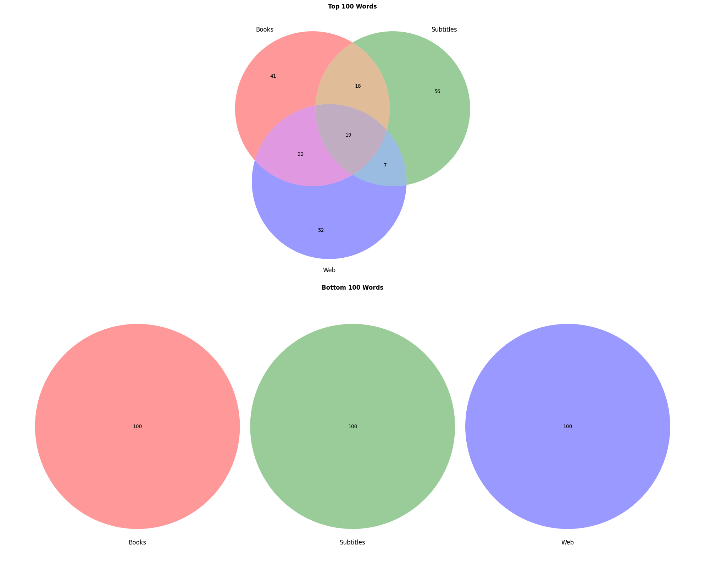
Click to view analysis output
TOP 100 WORDS: Words in ALL THREE datasets (19 words): back, day, find, first, good, great, like, make, new, one, people, right, see, time, two, way, well, work, year Words in BOOKS & SUBTITLES only (18 words): come, doe, even, give, know, life, little, long, made, man, mean, much, must, place, said, say, take, woman Words in BOOKS & WEB only (22 words): also, area, city, company, group, information, line, may, member, number, order, part, program, report, result, school, service, state, system, use, used, world Words in SUBTITLES & WEB only (7 words): get, go, help, home, last, name, please Words in BOOKS only (41 words): act, american, another, case, change, child, country, court, development, effect, every, fact, far, form, general, given, government, hand, high, house, however, interest, law, many, men, national, person, point, power, present, problem, public, question, rate, section, study, three, united, value, water, within Words in SUBTITLES only (56 words): always, around, away, bad, believe, big, boy, ca, call, done, ever, father, feel, fine, friend, girl, god, going, got, guy, keep, leave, let, look, lot, love, maybe, money, mr., na, need, never, night, nothing, oh, okay, old, put, really, sir, sorry, stay, still, stop, sure, talk, tell, thank, thing, think, thought, told, wait, want, yeah, yes Words in WEB only (52 words): add, available, best, book, business, buy, car, click, comment, contact, copyright, data, date, email, file, forum, free, game, health, hotel, info, item, jan, job, link, list, map, message, music, news, next, online, page, photo, pm, policy, post, price, product, review, search, set, site, software, store, support, term, top, user, video, view, web BOTTOM 100 WORDS: ================================================== Words in ALL THREE datasets (0 words): None Words in BOOKS & SUBTITLES only (0 words): None Words in BOOKS & WEB only (0 words): None Words in SUBTITLES & WEB only (0 words): None Words in BOOKS only (100 words): anagrammatises, aquilege, arterialises, atrophedema, basifies, bedighting, bespeckles, burglarises, candyweed, capsulises, carnalises, carposporous, chichiest, clareting, clinocephalism, colourises, corakan, creashak, crocolite, demasculinise, detribalises, diabolises, discasing, discerping, disforests, displumes, eightvo, embrangles, etherises, exbibyte, floodhead, fluoridising, footslogs, frontstall, gynaeolatry, harlequining, holeyest, humidest, hygienise, hyperlipoidaemia, imminentness, imperfectest, inhumanest, iridoncus, jaggiest, jewbush, jocundest, jupaty, keratonosus, mailsorter, mayidism, meerestone, mongrelises, mundanest, mussitated, mussitating, nauseatingness, obeser, onomancer, ortygan, phlebotomizes, polyplacophore, psilotatae, putrider, quetching, religiousism, rotundest, sailplaned, scranches, seasicker, secernate, spicemill, straightforwarder, synercus, tabularises, taraktagenos, telepathising, telepathizes, terrietia, theologiser, tichodrome, tribulates, triostium, tunaburger, unappetizingness, unevenest, unforethoughtful, unitises, unpermissiveness, unsubtlest, uptighter, vetchworm, vitriolled, voltarean, waggonwright, wedeled, winteriest, wrawls, yanquapin, yauped Words in SUBTITLES only (100 words): adoration, aiken, alerting, amazement, applesauce, beckons, bestest, brownstone, bruges, busier, callback, carpentry, characterize, christen, converging, corsica, crumbled, debit, decryption, directional, endures, evaporated, flintstone, forsaking, gooder, guardianship, gulag, hounded, impunity, inconspicuous, invoked, jumble, justifiable, khaki, knapsack, labrador, laguna, lally, lansing, lind, locus, loosing, memorandum, methodist, miri, molding, naga, nativity, nauseating, nicker, nullah, nunnery, oni, overzealous, p.e., parasitic, pituitary, playhouse, pollute, pomegranate, pondering, pragmatic, pram, predicts, printout, reiterate, retaining, retires, rotor, scrambler, shebang, sifting, slowest, southerner, spatula, splutter, squabbling, stamping, steeple, straightening, sussex, swerved, synergy, texan, traverse, tricycle, underlined, undisclosed, unknowingly, unsupervised, v.p., vaporize, varys, vas, ventricle, winkle, wisp, workhouse, wormwood, wylie Words in WEB only (100 words): accessorial, aimlessness, airburst, amytal, antedated, antemortem, areolar, asilidae, asklepios, australopithecine, avows, barkes, catasetum, caustically, characin, choreographs, churchillian, cinclus, clupeidae, cocain, coelom, combativeness, commiserated, complots, concussed, containes, contentiousness, counterattacked, crookedly, deckled, deferentially, defoliate, dekko, demulcent, deodorized, deutzia, disconnectedness, distributary, dostoevski, enciphering, enthral, erithacus, expurgated, feminize, flouring, flurried, forfend, fragmental, gloominess, greyer, griever, hellishly, hinderer, hunchbacked, insatiably, jelled, jerkily, jobholder, jocose, lagune, leting, lither, litigates, loadstar, lobsterman, louisianan, mournes, moussorgsky, noctua, noncom, nybble, overborne, overflying, paramountcy, passiveness, pleochroism, rebating, retreaded, rusticated, saleroom, scomberomorus, skiving, steradian, suavely, sumach, synchronises, tackiest, tameness, thryothorus, topknot, topmast, triose, trochilidae, underselling, undiplomatic, urga, urmia, vambrace, vaporisation, wanter
For the “basic” words, there is substantial overlap between the datasets, with 19 words appearing across all three (“back, day, find, first, good, great, like, make, new, one, people, right, see, time, two, way, well, work, year”). That points to core vocabulary that transcends domain boundaries. When analysing the results for each dataset more closely, one may notice that:
- Books demonstrate formal institutional language (41 unique words like “act, american, case, government, law, public”)
- Subtitles are full of conversational markers and basic verbs (56 unique words like “okay, oh, sorry, sure, thank, yes, yeah; believe, go, feel, look, love, need, wait, want”)
- Web content is dominated by web-related terms (52 unique words like “add, available, book, business, click, comment, data, email, file, software, copyright”).
In contrast, the “non-basic” words (expectedly) show no overlap between datasets, with each corpus containing completely different sets of specialized terms.
Additionally, let us take a look at several definitions from the book corpus:
df_basic_web = pd.read_csv("results/wordnet/books/all_100/top100_defs_with_freq.csv")
df_basic_web[:5]| lemma | definition | len_tokens | mean_log_freq | median_log_freq | miss_rate | |
|---|---|---|---|---|---|---|
| 0 | one | used of a single unit or thing; not two or more | 4 | -3.420481 | -3.455693 | 0.0 |
| 1 | may | the month following April and preceding June | 5 | -4.044908 | -3.743638 | 0.0 |
| 2 | time | an instance or single occasion for some event | 4 | -3.822569 | -3.778365 | 0.0 |
| 3 | state | the territory occupied by one of the constitue... | 6 | -4.116025 | -4.071440 | 0.0 |
| 4 | year | a period of time containing 365 (or 366) days | 4 | -3.321808 | -3.196169 | 0.0 |
df_nonbasic_web = pd.read_csv("results/wordnet/books/all_100/bottom100_defs_with_freq.csv")
df_nonbasic_web[:5]| lemma | definition | len_tokens | mean_log_freq | median_log_freq | miss_rate | |
|---|---|---|---|---|---|---|
| 0 | fluoridising | subject to fluoridation; treat with fluoride | 4 | -4.832069 | -4.833181 | 0.000000 |
| 1 | imperfectest | not perfect; defective or inadequate | 3 | -4.547468 | -4.631890 | 0.000000 |
| 2 | candyweed | bog plant of pine barrens of southeastern Unit... | 11 | -4.252058 | -4.476592 | 0.181818 |
| 3 | jupaty | a tall Brazilian feather palm with a terminal ... | 17 | -4.390772 | -4.289991 | 0.000000 |
| 4 | unevenest | not even or uniform as e.g. in shape or texture | 4 | -4.070057 | -4.151500 | 0.000000 |
The words, the definitions, the length (after stopword removal), and log frequencies of the words used in the definitions are as expected. Lower mean log frequency corresponds to more rare (i.e., less basic) words being used in the definitions. The basic word list features words such as “one”, “may”, and “time”, while the non-basic one includes specialised concepts such as “fluoridising” and uncommon wordforms such as “imperfectest”.
5.1.5 Analysis: token frequencies in definitions
Now that I have shown that the obtained words and definitions seem to be as expected (basic words between datasets overlap, but for each dataset distinct patterns are identifiable; non-basic words are indeed rare and do not overlap between datasets; more basic definitions get higher log frequency score), let’s analyze the results I obtained earlier, when looking into “basicness” of the definitions on the previous step.
In addition to the numbers (that you can see by going up to the Initial approach section and clicking to expand the analysis results for each corpus), let’s look at the violin plots for mean log10 frequency of words in definitions and mean length of definitions for each corpus.
plot_violin_pairs(
pairs=[
("./results/wordnet/web/all_100/top100_defs_with_freq.csv", f"./results/wordnet/web/all_100/bottom100_defs_with_freq.csv"),
("./results/wordnet/books/all_100/top100_defs_with_freq.csv", f"./results/wordnet/books/all_100/bottom100_defs_with_freq.csv"),
("./results/wordnet/subtitles/all_100/top100_defs_with_freq.csv", f"./results/wordnet/subtitles/all_100/bottom100_defs_with_freq.csv"),
],
value_col="mean_log_freq",
pair_labels=["Web","Books","Subs"],
transform="yes",
yscale="log",
title="Token frequencies per million"
)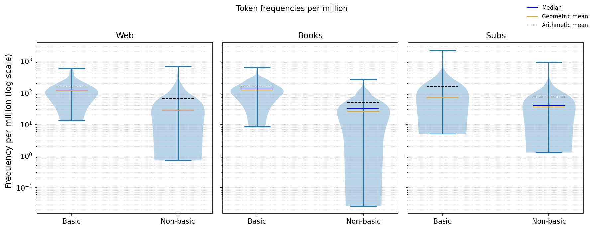
Across all three corpora, definitions of the “basic” words systematically employ higher-frequency (i.e., more “basic”) vocabulary than those of “non-basic” words. In the Web corpus, the mean log-frequency gap is 0.63 (−3.93 vs −4.56; p<.001; d=1.27), with a 95 % CI [0.49, 0.77], corresponding to roughly 117 vs 27.5 occurrences per million tokens—about 4.5× more frequent wording. In the Subtitles corpus, the gap is 0.30 (−4.16 vs −4.46; p<.001; d=0.56; 95 % CI [0.15, 0.44]), equating to approximately 69 vs 35 per million, or about 2× higher frequency. In the Books corpus, the gap is 0.69 (−3.91 vs −4.60; p<.001; d=1.36; 95 % CI [0.54, 0.83]), corresponding to 123 vs 25 per million, or roughly 5× more frequent wording. Across all three datasets, these differences are statistically significant (p<.001) and consistently in the same direction, with more “basic” words featuring more “basic” defitions as well. The effect sizes indicate large differences for Web and Books (d>.8) and moderate difference for Subtitles (.5>d>.2).
The violin plots tell the same story: for every corpus, the distributions for “basic” words are shifted upward on the log scale, and their geometric-mean lines (orange) consistently lie above those for “non-basic”. As for the shapes of the curves: in Web and Books, “basic” distributions are compact and concentrated at higher frequencies, while “non-basic” distributions are broader with longer rare-word tails; and Subtitles show greater overlap and lower overall mass, consistent with the smaller effect size.
The above-described patterns directly contradict the supposed “basic-word paradox”. Instead, they seems to align with defining-vocabulary practices: most “basic” words are explained with other “basic” words.
5.1.6 Analysis: length of definitions
plot_violin_pairs(
pairs=[
("./results/wordnet/web/all_100/top100_defs_with_freq.csv", f"./results/wordnet/web/all_100/bottom100_defs_with_freq.csv"),
("./results/wordnet/books/all_100/top100_defs_with_freq.csv", f"./results/wordnet/books/all_100/bottom100_defs_with_freq.csv"),
("./results/wordnet/subtitles/all_100/top100_defs_with_freq.csv", f"./results/wordnet/subtitles/all_100/bottom100_defs_with_freq.csv"),
],
value_col="len_tokens",
pair_labels=["Web","Books","Subs"],
transform=None,
yscale="linear",
title="Definition length"
)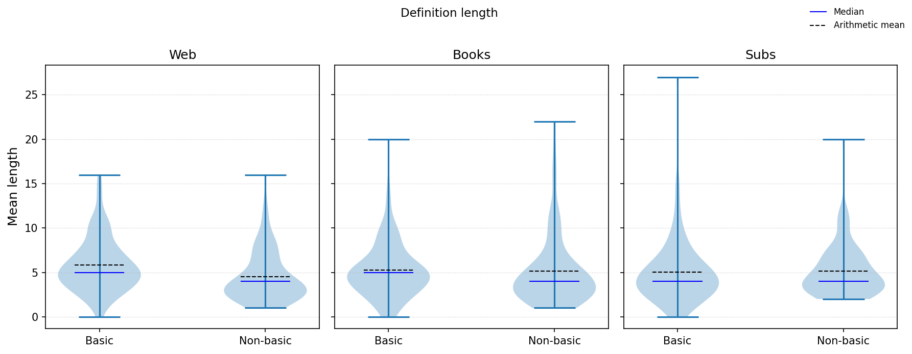
For definition length, basic terms are modestly longer on Web (+1.31 tokens; 5.84 vs 4.53; p=.002; d=0.44) and Books (+0.58; 5.09 vs 4.51; p<.001; d=0.20), but not in Subtitles (−0.23; 4.97 vs 5.20; p=.093, d=-0.045). For Web and Books, the difference is statistically significant with p-value smaller than .05 and the Cohen’s d points to small difference(.2<d<.5). For Subtitles, both Cohen’s d (<.2) and p-value (>.05) point to a negligible difference that is not statistically significant.
The violin plots show that the distributions of definition length are broad and strongly right-skewed, with long tails of long definitions across all corpora. The “basic” violins are slightly shifted upward (comared to “non-basic” ones) in Web and Books, indicating modestly longer definitions on average. At the same time, the large overlap between groups (especially in Subtitles) shows that the difference is minor relative to within-group variability. The wide middle portion of each violin (4–6 token) indicates that most definitions cluster tightly around similar short lengths, confirming that most definitions are short and compact.
This suggests that while explanations remain lexically simple, basic concepts may require slightly more wording (e.g., multiple senses or usage notes). That is consistent with my expectation that basic terms are conceptually rich, describing broad, general categories (and thus requiring longer definitions).
NB-1: In some “basic” cases, definition length equals 0, which can be explained by stopword removal, i.e. definitions for some “basic” words consisted entirely of stopwords.
NB-2: It is important to note that I only looked at one, most commonly used (according to SemCor) sense of each word. It would also be interesting to look into polysemy of “basic” words, but that is outside of the scope of this project.
5.1.7 Why isn’t the hypothesis supported?
In this section, I review two possible issues with the project setup. Later in the notebook, I address both of them to see whether the hypothesis is supported in an alternative setting.
When reviewing the list of target words, I noticed that the dataset mixes different parts of speech. These parts of speech differ systematically in how their definitions are written, which, in its turn, may affect there frequency profile.
For example, noun definitions in WordNet often include domain-specific or technical terms (“an assembly … to conduct judicial business” for “court”), leading to lower mean log frequencies. Verb definitions, however, tend to use very frequent auxiliary or generic words such as do, cause, make, which may raise their mean definition frequencies. Adjectives are defined either with longer explanatory phrases (“having desirable or positive qualities especially those suitable for a thing specified” for “good”) or with standardized repretitive construtions (“of or relating to or involving light or optics” for “optical”, and “relating or belonging to the class of chemical compounds having a carbon basis” for “organic”), again producing a distinct frequency profile and a higher mean length of explanation.
These systematic stylistic differences can distort the contrast between “basic” and “non-basic” words, so I decided to break the analysis down by part of speech. This way I can check whether the “basic-word paradox” (that basic words are defined using rarer vocabulary) holds within any of the given categoties or fails to hold for all of them.
Another problematic point is my choice of the source for word definitions. WordNet definitions are highly standardized and formulaic as they are supposed to serve as machine-readable entries in a lexical database rather than human-oriented dictionary definitions.
Each definition is written to describe a synset, or a specific conceptual sense. Often, definitions follow “hypernym + differentia” template and use repetitive constructions such as “of or relating to …” or “having …”. For example, “organization” is defined as “a group of people who work together”, patient as “a person who requires medical care”, and toy as “an artifact designed to be played with”, each mapping the concept to a high-level class (group/person/artifact) with short additional information to differentiate between subclasses. Even for very broad classes, the definitions are taxonomic and and concise. For example, “animal” is “a living organism characterized by voluntary movement”, and “device” is “an instrumentality invented for a particular purpose”.
This uniformity results in definitions that sound unnatural and lack the variation and descriptiveness of human-written lexicographic entries.
5.2 Alternarive approach: nouns/verbs/adjectives/adverbs analyzed separately
In this part of the project, I also analyse 100 words for each group with definitions obtained from WordNet. However, in this case, different parts of speech are analyzed separately to see whether the word’s part of speech affects the complexity of its definition. I hypothesize that some parts of speech may follow the “Basic-Word Paradox” and some may not.
for corpus_type in {"books", "web", "subtitles"}:
for pos in {wn.NOUN, wn.VERB, wn.ADJ, wn.ADV}:
print(f"\n\nAnalyzing for {corpus_type} corpus, `{pos}` part-of-speech", flush=True)
if corpus_type == "books":
captured_output = capture_function_output(full_run, 100, 100, file_name=f"./data/unigram_freq_{corpus_type}.txt", folder=f"./results/wordnet/{corpus_type}/{pos}", pos=pos)
else:
captured_output = capture_function_output(full_run, 100, 100, file_name=f"./data/unigram_freq_{corpus_type}.csv", folder=f"./results/wordnet/{corpus_type}/{pos}", pos=pos)
display(HTML(collapsible_content.replace("{captured_output}", captured_output)))
Analyzing for subtitles corpus, `a` part-of-speechLemmatizing: 100%|██████████| 30000/30000 [00:00<00:00, 172670.95it/s]
Getting top frequency words: 958it [00:00, 3690.68it/s]
Getting bottom frequency words: 10%|█ | 3100/29793 [00:00<00:02, 11669.50it/s]
Obtaining definitions: 100it [00:00, 3602.05it/s]
Obtaining definitions: 100it [00:00, 4476.12it/s]Click to view analysis output
Log-10 mean frequency of tokens in definitions Basic=-4.4466 (+-0.4481), nonbasic=-4.7875(+-0.5560) Welch's t-test (unequal variances) t = 4.774, p = 3.6e-06 Cohen's d = 0.675 (positive ⇒ basic > nonbasic) Mann-Whitney U (robustness) U = 6964, p = 1.61e-06 95% CI for (basic - nonbasic) mean difference: [0.2001, 0.4818] Log-10 median frequency of tokens in definitions Basic=-4.4940 (+-0.4696), nonbasic=-4.8303(+-0.6004) Welch's t-test (unequal variances) t = 4.411, p = 1.73e-05 Cohen's d = 0.624 (positive ⇒ basic > nonbasic) Mann-Whitney U (robustness) U = 6798, p = 1.12e-05 95% CI for (basic - nonbasic) mean difference: [0.1859, 0.4866] Length of definition in tokens Basic=5.6400 (+-2.5167), nonbasic=4.0000(+-1.9540) Welch's t-test (unequal variances) t = 5.147, p = 6.67e-07 Cohen's d = 0.728 (positive ⇒ basic > nonbasic) Mann-Whitney U (robustness) U = 6992, p = 8.8e-07 95% CI for (basic - nonbasic) mean difference: [1.0114, 2.2686]
Analyzing for subtitles corpus, `v` part-of-speechLemmatizing: 100%|██████████| 30000/30000 [00:00<00:00, 336719.70it/s]
Getting top frequency words: 381it [00:00, 4270.34it/s]
Getting bottom frequency words: 9%|▊ | 2087/24370 [00:00<00:01, 15583.21it/s]
Obtaining definitions: 100it [00:00, 7894.42it/s]
Obtaining definitions: 100it [00:00, 2861.23it/s]Click to view analysis output
Log-10 mean frequency of tokens in definitions Basic=-4.0525 (+-0.5156), nonbasic=-4.3371(+-0.6069) Welch's t-test (unequal variances) t = 3.575, p = 0.000443 Cohen's d = 0.506 (positive ⇒ basic > nonbasic) Mann-Whitney U (robustness) U = 6431, p = 0.000474 95% CI for (basic - nonbasic) mean difference: [0.1276, 0.4417] Log-10 median frequency of tokens in definitions Basic=-4.0619 (+-0.5490), nonbasic=-4.3432(+-0.6566) Welch's t-test (unequal variances) t = 3.287, p = 0.00121 Cohen's d = 0.465 (positive ⇒ basic > nonbasic) Mann-Whitney U (robustness) U = 6310, p = 0.00137 95% CI for (basic - nonbasic) mean difference: [0.1125, 0.4501] Length of definition in tokens Basic=4.0900 (+-1.9441), nonbasic=3.8500(+-1.9918) Welch's t-test (unequal variances) t = 0.862, p = 0.39 Cohen's d = 0.122 (positive ⇒ basic > nonbasic) Mann-Whitney U (robustness) U = 5506, p = 0.209 95% CI for (basic - nonbasic) mean difference: [-0.3089, 0.7889]
Analyzing for subtitles corpus, `n` part-of-speechLemmatizing: 100%|██████████| 30000/30000 [00:00<00:00, 224402.73it/s]
Getting top frequency words: 383it [00:00, 3363.96it/s]
Getting bottom frequency words: 1%| | 255/26060 [00:00<00:02, 10333.89it/s]
Obtaining definitions: 100it [00:00, 9758.05it/s]
Obtaining definitions: 100it [00:00, 5887.24it/s]Click to view analysis output
Log-10 mean frequency of tokens in definitions Basic=-4.2765 (+-0.5239), nonbasic=-4.5308(+-0.3929) Welch's t-test (unequal variances) t = 3.882, p = 0.000144 Cohen's d = 0.549 (positive ⇒ basic > nonbasic) Mann-Whitney U (robustness) U = 6570, p = 0.000126 95% CI for (basic - nonbasic) mean difference: [0.1250, 0.3835] Log-10 median frequency of tokens in definitions Basic=-4.2899 (+-0.5661), nonbasic=-4.4932(+-0.4373) Welch's t-test (unequal variances) t = 2.842, p = 0.00498 Cohen's d = 0.402 (positive ⇒ basic > nonbasic) Mann-Whitney U (robustness) U = 6185, p = 0.0038 95% CI for (basic - nonbasic) mean difference: [0.0622, 0.3444] Length of definition in tokens Basic=5.2600 (+-3.7809), nonbasic=6.0800(+-3.1676) Welch's t-test (unequal variances) t = -1.662, p = 0.0981 Cohen's d = -0.235 (positive ⇒ basic > nonbasic) Mann-Whitney U (robustness) U = 3828, p = 0.00386 95% CI for (basic - nonbasic) mean difference: [-1.7929, 0.1529]
Analyzing for subtitles corpus, `r` part-of-speechLemmatizing: 100%|██████████| 30000/30000 [00:00<00:00, 533789.45it/s]
Getting top frequency words: 1829it [00:00, 4592.28it/s]
Getting bottom frequency words: 19%|█▊ | 5564/29993 [00:00<00:01, 13503.28it/s]
Obtaining definitions: 100it [00:00, 13367.02it/s]
Obtaining definitions: 100it [00:00, 7302.95it/s]Click to view analysis output
Log-10 mean frequency of tokens in definitions Basic=-4.1245 (+-0.5742), nonbasic=-4.7327(+-0.6626) Welch's t-test (unequal variances) t = 6.887, p = 7.92e-11 Cohen's d = 0.981 (positive ⇒ basic > nonbasic) Mann-Whitney U (robustness) U = 7592, p = 7.34e-12 95% CI for (basic - nonbasic) mean difference: [0.4340, 0.7824] Log-10 median frequency of tokens in definitions Basic=-4.1050 (+-0.6364), nonbasic=-4.7378(+-0.6758) Welch's t-test (unequal variances) t = 6.766, p = 1.51e-10 Cohen's d = 0.964 (positive ⇒ basic > nonbasic) Mann-Whitney U (robustness) U = 7464, p = 6.58e-11 95% CI for (basic - nonbasic) mean difference: [0.4483, 0.8172] Length of definition in tokens Basic=3.4500 (+-2.3969), nonbasic=2.2500(+-0.9143) Welch's t-test (unequal variances) t = 4.678, p = 7.3e-06 Cohen's d = 0.662 (positive ⇒ basic > nonbasic) Mann-Whitney U (robustness) U = 6414, p = 0.000323 95% CI for (basic - nonbasic) mean difference: [0.6924, 1.7076]
Analyzing for books corpus, `a` part-of-speechLemmatizing: 100%|██████████| 397430/397430 [00:01<00:00, 221739.18it/s]
Getting top frequency words: 782it [00:00, 4504.84it/s]
Getting bottom frequency words: 18%|█▊ | 72371/394946 [00:02<00:10, 29367.46it/s]
Obtaining definitions: 100it [00:00, 11394.47it/s]
Obtaining definitions: 100it [00:00, 3857.43it/s]Click to view analysis output
Log-10 mean frequency of tokens in definitions Basic=-4.0004 (+-0.3236), nonbasic=-5.1688(+-0.9526) Welch's t-test (unequal variances) t = 11.562, p = 3.06e-21 Cohen's d = 1.646 (positive ⇒ basic > nonbasic) Mann-Whitney U (robustness) U = 8865, p = 5.59e-22 95% CI for (basic - nonbasic) mean difference: [0.9683, 1.3685] Log-10 median frequency of tokens in definitions Basic=-3.9622 (+-0.3583), nonbasic=-5.0902(+-1.0302) Welch's t-test (unequal variances) t = 10.295, p = 3.06e-18 Cohen's d = 1.465 (positive ⇒ basic > nonbasic) Mann-Whitney U (robustness) U = 8755, p = 7.51e-21 95% CI for (basic - nonbasic) mean difference: [0.9111, 1.3449] Length of definition in tokens Basic=5.7200 (+-2.3315), nonbasic=3.3300(+-2.0940) Welch's t-test (unequal variances) t = 7.626, p = 1.02e-12 Cohen's d = 1.079 (positive ⇒ basic > nonbasic) Mann-Whitney U (robustness) U = 8050, p = 5.31e-14 95% CI for (basic - nonbasic) mean difference: [1.7720, 3.0080]
Analyzing for books corpus, `v` part-of-speechLemmatizing: 100%|██████████| 397430/397430 [00:01<00:00, 341401.90it/s]
Getting top frequency words: 435it [00:00, 2908.28it/s]
Getting bottom frequency words: 26%|██▌ | 96019/372294 [00:03<00:10, 26421.41it/s]
Obtaining definitions: 100it [00:00, 6615.93it/s]
Obtaining definitions: 100it [00:00, 2485.22it/s]Click to view analysis output
Log-10 mean frequency of tokens in definitions Basic=-3.6676 (+-0.3455), nonbasic=-4.5182(+-1.1397) Welch's t-test (unequal variances) t = 7.139, p = 8.48e-11 Cohen's d = 1.008 (positive ⇒ basic > nonbasic) Mann-Whitney U (robustness) U = 8264, p = 3.42e-16 95% CI for (basic - nonbasic) mean difference: [0.6146, 1.0865] Log-10 median frequency of tokens in definitions Basic=-3.6502 (+-0.3980), nonbasic=-4.4600(+-1.1592) Welch's t-test (unequal variances) t = 6.604, p = 1.1e-09 Cohen's d = 0.933 (positive ⇒ basic > nonbasic) Mann-Whitney U (robustness) U = 7987, p = 7.68e-14 95% CI for (basic - nonbasic) mean difference: [0.5671, 1.0526] Length of definition in tokens Basic=4.3700 (+-2.1256), nonbasic=3.3600(+-1.5604) Welch's t-test (unequal variances) t = 3.830, p = 0.000176 Cohen's d = 0.542 (positive ⇒ basic > nonbasic) Mann-Whitney U (robustness) U = 6538, p = 0.000136 95% CI for (basic - nonbasic) mean difference: [0.4897, 1.5303]
Analyzing for books corpus, `n` part-of-speechLemmatizing: 100%|██████████| 397430/397430 [00:01<00:00, 394381.43it/s]
Getting top frequency words: 289it [00:00, 2714.56it/s]
Getting bottom frequency words: 4%|▍ | 14069/360676 [00:00<00:20, 17011.78it/s]
Obtaining definitions: 100it [00:00, 7481.15it/s]
Obtaining definitions: 100it [00:00, 3996.94it/s]Click to view analysis output
Log-10 mean frequency of tokens in definitions Basic=-3.8994 (+-0.3450), nonbasic=-4.5402(+-0.5794) Welch's t-test (unequal variances) t = 9.503, p = 2.77e-17 Cohen's d = 1.344 (positive ⇒ basic > nonbasic) Mann-Whitney U (robustness) U = 8612, p = 1.1e-18 95% CI for (basic - nonbasic) mean difference: [0.5076, 0.7739] Log-10 median frequency of tokens in definitions Basic=-3.8074 (+-0.3555), nonbasic=-4.4167(+-0.6454) Welch's t-test (unequal variances) t = 8.268, p = 5.91e-14 Cohen's d = 1.169 (positive ⇒ basic > nonbasic) Mann-Whitney U (robustness) U = 8256, p = 1.82e-15 95% CI for (basic - nonbasic) mean difference: [0.4637, 0.7548] Length of definition in tokens Basic=5.4700 (+-2.8086), nonbasic=6.8200(+-4.3190) Welch's t-test (unequal variances) t = -2.620, p = 0.00958 Cohen's d = -0.371 (positive ⇒ basic > nonbasic) Mann-Whitney U (robustness) U = 4254, p = 0.0664 95% CI for (basic - nonbasic) mean difference: [-2.3670, -0.3330]
Analyzing for books corpus, `r` part-of-speechLemmatizing: 100%|██████████| 397430/397430 [00:00<00:00, 603125.23it/s]
Getting top frequency words: 2069it [00:00, 5201.64it/s]
Getting bottom frequency words: 40%|███▉ | 157626/397423 [00:06<00:09, 25198.88it/s]
Obtaining definitions: 100it [00:00, 16542.97it/s]
Obtaining definitions: 100it [00:00, 10876.78it/s]Click to view analysis output
Log-10 mean frequency of tokens in definitions Basic=-3.8885 (+-0.5012), nonbasic=-5.0662(+-0.6684) Welch's t-test (unequal variances) t = 14.071, p = 5.55e-31 Cohen's d = 1.992 (positive ⇒ basic > nonbasic) Mann-Whitney U (robustness) U = 9117, p = 1.1e-24 95% CI for (basic - nonbasic) mean difference: [1.0125, 1.3428] Log-10 median frequency of tokens in definitions Basic=-3.8508 (+-0.5354), nonbasic=-5.0801(+-0.7853) Welch's t-test (unequal variances) t = 12.912, p = 3.22e-27 Cohen's d = 1.827 (positive ⇒ basic > nonbasic) Mann-Whitney U (robustness) U = 8952, p = 6.76e-23 95% CI for (basic - nonbasic) mean difference: [1.0414, 1.4171] Length of definition in tokens Basic=3.5900 (+-2.4499), nonbasic=2.2700(+-0.7502) Welch's t-test (unequal variances) t = 5.152, p = 1.05e-06 Cohen's d = 0.729 (positive ⇒ basic > nonbasic) Mann-Whitney U (robustness) U = 6551, p = 7.39e-05 95% CI for (basic - nonbasic) mean difference: [0.8126, 1.8274]
Analyzing for web corpus, `a` part-of-speechLemmatizing: 100%|██████████| 333333/333333 [00:00<00:00, 511348.13it/s]
Getting top frequency words: 990it [00:00, 4879.01it/s]
Getting bottom frequency words: 12%|█▏ | 39063/332546 [00:01<00:11, 24815.75it/s]
Obtaining definitions: 100it [00:00, 12817.60it/s]
Obtaining definitions: 100it [00:00, 6222.08it/s]Click to view analysis output
Log-10 mean frequency of tokens in definitions Basic=-4.1695 (+-0.4135), nonbasic=-4.7509(+-0.6221) Welch's t-test (unequal variances) t = 7.756, p = 7.68e-13 Cohen's d = 1.102 (positive ⇒ basic > nonbasic) Mann-Whitney U (robustness) U = 7788, p = 2.84e-12 95% CI for (basic - nonbasic) mean difference: [0.4334, 0.7293] Log-10 median frequency of tokens in definitions Basic=-4.1058 (+-0.4544), nonbasic=-4.6779(+-0.6336) Welch's t-test (unequal variances) t = 7.313, p = 8.6e-12 Cohen's d = 1.039 (positive ⇒ basic > nonbasic) Mann-Whitney U (robustness) U = 7708, p = 1.12e-11 95% CI for (basic - nonbasic) mean difference: [0.4177, 0.7265] Length of definition in tokens Basic=5.7600 (+-2.5151), nonbasic=3.8100(+-2.1588) Welch's t-test (unequal variances) t = 5.883, p = 1.74e-08 Cohen's d = 0.832 (positive ⇒ basic > nonbasic) Mann-Whitney U (robustness) U = 7519, p = 4.9e-10 95% CI for (basic - nonbasic) mean difference: [1.2963, 2.6037]
Analyzing for web corpus, `v` part-of-speechLemmatizing: 100%|██████████| 333333/333333 [00:00<00:00, 453051.87it/s]
Getting top frequency words: 482it [00:00, 4367.49it/s]
Getting bottom frequency words: 15%|█▌ | 47838/317003 [00:01<00:10, 26409.91it/s]
Obtaining definitions: 100it [00:00, 9486.80it/s]
Obtaining definitions: 100it [00:00, 3385.59it/s]Click to view analysis output
Log-10 mean frequency of tokens in definitions Basic=-3.7822 (+-0.4010), nonbasic=-4.3861(+-0.5701) Welch's t-test (unequal variances) t = 8.665, p = 2.73e-15 Cohen's d = 1.225 (positive ⇒ basic > nonbasic) Mann-Whitney U (robustness) U = 8185, p = 7.2e-15 95% CI for (basic - nonbasic) mean difference: [0.4663, 0.7414] Log-10 median frequency of tokens in definitions Basic=-3.7421 (+-0.4669), nonbasic=-4.3231(+-0.6227) Welch's t-test (unequal variances) t = 7.465, p = 3.24e-12 Cohen's d = 1.056 (positive ⇒ basic > nonbasic) Mann-Whitney U (robustness) U = 7808, p = 6.89e-12 95% CI for (basic - nonbasic) mean difference: [0.4275, 0.7346] Length of definition in tokens Basic=4.3200 (+-1.9893), nonbasic=3.5200(+-1.7493) Welch's t-test (unequal variances) t = 3.020, p = 0.00287 Cohen's d = 0.427 (positive ⇒ basic > nonbasic) Mann-Whitney U (robustness) U = 6346, p = 0.000817 95% CI for (basic - nonbasic) mean difference: [0.2776, 1.3224]
Analyzing for web corpus, `n` part-of-speechLemmatizing: 100%|██████████| 333333/333333 [00:00<00:00, 379162.92it/s]
Getting top frequency words: 249it [00:00, 4338.43it/s]
Getting bottom frequency words: 2%|▏ | 6172/315566 [00:00<00:13, 22246.49it/s]
Obtaining definitions: 100it [00:00, 12545.40it/s]
Obtaining definitions: 100it [00:00, 4800.79it/s]Click to view analysis output
Log-10 mean frequency of tokens in definitions Basic=-3.9085 (+-0.3203), nonbasic=-4.5695(+-0.6389) Welch's t-test (unequal variances) t = 9.250, p = 2.58e-16 Cohen's d = 1.308 (positive ⇒ basic > nonbasic) Mann-Whitney U (robustness) U = 8317, p = 5.34e-16 95% CI for (basic - nonbasic) mean difference: [0.5198, 0.8023] Log-10 median frequency of tokens in definitions Basic=-3.7949 (+-0.3194), nonbasic=-4.4735(+-0.7330) Welch's t-test (unequal variances) t = 8.488, p = 3.28e-14 Cohen's d = 1.200 (positive ⇒ basic > nonbasic) Mann-Whitney U (robustness) U = 8106, p = 3.22e-14 95% CI for (basic - nonbasic) mean difference: [0.5205, 0.8368] Length of definition in tokens Basic=6.0800 (+-2.8839), nonbasic=5.6800(+-3.3751) Welch's t-test (unequal variances) t = 0.901, p = 0.369 Cohen's d = 0.127 (positive ⇒ basic > nonbasic) Mann-Whitney U (robustness) U = 5664, p = 0.102 95% CI for (basic - nonbasic) mean difference: [-0.4756, 1.2756]
Analyzing for web corpus, `r` part-of-speechLemmatizing: 100%|██████████| 333333/333333 [00:00<00:00, 576241.16it/s]
Getting top frequency words: 3609it [00:00, 6128.96it/s]
Getting bottom frequency words: 13%|█▎ | 43585/333326 [00:01<00:11, 25077.18it/s]
Obtaining definitions: 100it [00:00, 15147.36it/s]
Obtaining definitions: 100it [00:00, 9547.48it/s]Click to view analysis output
Log-10 mean frequency of tokens in definitions Basic=-4.0334 (+-0.4925), nonbasic=-5.1014(+-0.5456) Welch's t-test (unequal variances) t = 14.465, p = 1.1e-32 Cohen's d = 2.054 (positive ⇒ basic > nonbasic) Mann-Whitney U (robustness) U = 9011, p = 2.06e-24 95% CI for (basic - nonbasic) mean difference: [0.9224, 1.2136] Log-10 median frequency of tokens in definitions Basic=-3.9843 (+-0.5238), nonbasic=-5.0804(+-0.6193) Welch's t-test (unequal variances) t = 13.457, p = 1.66e-29 Cohen's d = 1.910 (positive ⇒ basic > nonbasic) Mann-Whitney U (robustness) U = 8878, p = 5.88e-23 95% CI for (basic - nonbasic) mean difference: [0.9354, 1.2568] Length of definition in tokens Basic=3.5800 (+-2.5313), nonbasic=2.4100(+-0.9545) Welch's t-test (unequal variances) t = 4.325, p = 3.07e-05 Cohen's d = 0.612 (positive ⇒ basic > nonbasic) Mann-Whitney U (robustness) U = 6194, p = 0.00257 95% CI for (basic - nonbasic) mean difference: [0.6347, 1.7053]
5.2.1 Analysis: token frequencies in definitions
for pos in {wn.NOUN, wn.VERB, wn.ADJ, wn.ADV}:
pos_full = "Nouns" if pos == 'n' else "Verbs" if pos == 'v' else "Adjectives" if pos == 'a' else "Adverbs" if pos == 'r' else None
plot_violin_pairs(
pairs=[
(f"./results/wordnet/web/{pos}/top100_defs_with_freq.csv", f"./results/wordnet/web/{pos}/bottom100_defs_with_freq.csv"),
(f"./results/wordnet/books/{pos}/top100_defs_with_freq.csv", f"./results/wordnet/books/{pos}/bottom100_defs_with_freq.csv"),
(f"./results/wordnet/subtitles/{pos}/top100_defs_with_freq.csv", f"./results/wordnet/subtitles/{pos}/bottom100_defs_with_freq.csv"),
],
value_col="mean_log_freq",
pair_labels=["Web","Books","Subs"],
transform="yes",
yscale="log",
title=f"Token frequencies per million, {pos_full}"
)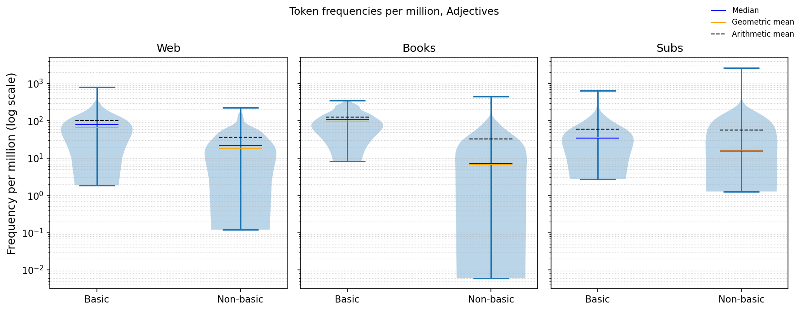
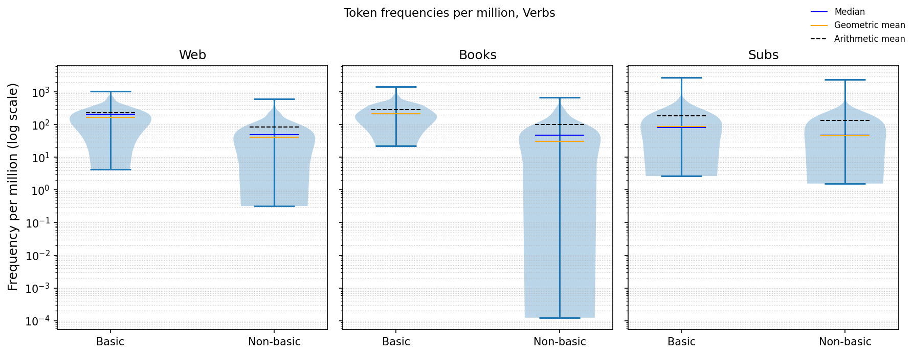
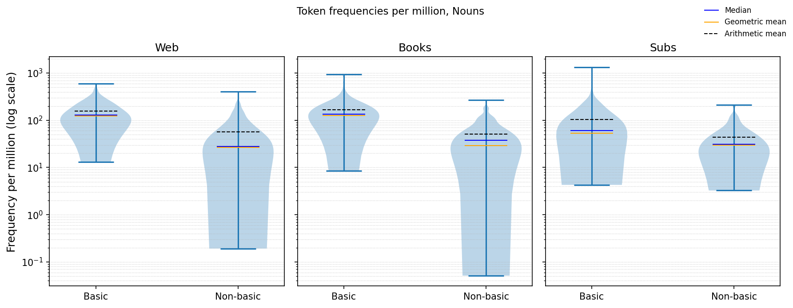
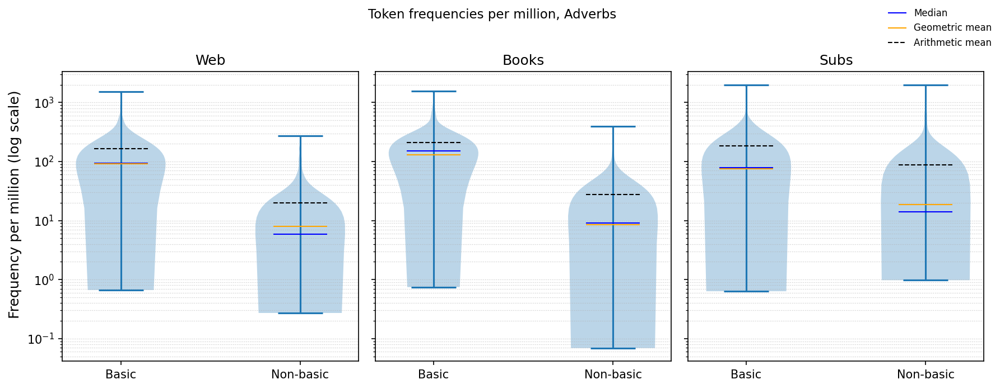
Basic adjectives consistently favor higher-frequency (more basic) defining vocabulary. In Web the gap is 0.58 (−4.17 vs −4.75; p<.001; d=1.10; 95% CI [0.43, 0.73]); in Books it is large at 1.17 (−4.00 vs −5.17; p<.001; d=1.65; 95% CI [0.97, 1.37]); and in Subtitles it is 0.34 (−4.45 vs −4.79; p<.001; d=0.68; 95% CI [0.20, 0.48]). The violins for Web and Books show a clear upward shift and tighter mass for basic adjectives, while Subtitles displays greater overlap and a smaller but still noticeable upward trend for basic vocabulary.
The same pattern holds for verbs, though with slightly smaller gaps than. Web shows a gap of 0.60 (−3.78 vs −4.39; p<.001; d=1.23; 95% CI [0.47, 0.74]); Books 0.85 (−3.67 vs −4.52; p<.001; d=1.01; 95% CI [0.61, 1.09]); and Subtitles 0.28 (−4.05 vs −4.34; p=.00044; d=0.51; 95% CI [0.13, 0.44]). The violins show basic verbs concentrated higher on the log scale, with non-basic verbs exhibiting broader, lower-frequency tails; overlap is greatest in Subtitles, again matching the smaller effect size.
Across all corpora, basic-noun definitions use higher-frequency vocabulary than those of non-basic nouns. In Web, the mean log-frequency gap is 0.66 (−3.91 vs −4.57; p<.001; d=1.31; 95% CI [0.52, 0.80]); in Books, the gap is 0.64 (−3.90 vs −4.54; p<.001; d=1.34; 95% CI [0.51, 0.77]); in Subtitles, it is 0.25 (−4.28 vs −4.53; p<.001; d=0.55; 95% CI [0.13, 0.38]). The violins mirror this pattern – basic distributions are shifted upward with heavier mass at higher frequencies, while non-basic nouns show broader spread and a long rare-word tail, especially for Web and Books; Subtitles shows more overlap and a smaller shift.
Adverbs show the strongest contrasts. Web shows a gap of 1.07 (−4.03 vs −5.10; p<.001; d=2.05; 95% CI [0.92, 1.21]); Books 1.18 (−3.89 vs −5.07; p<.001; d=1.99; 95% CI [1.01, 1.34]); and Subtitles 0.61 (−4.12 vs −4.73; p<.001; d=0.98; 95% CI [0.43, 0.78]). The violins show basic adverbs with distributions concentrated at much higher frequencies and non-basic adverbs with long rare-word tails; Subtitles again shows more overlap but still a clear upward shift for basic vocabulary.
Overall, for every part of speech and in every corpus, basic words are defined using systematically more frequent vocabulary, with large effects in Web and Books and more moderate effects in Subtitles.
5.2.2 Analysis: length of definitions
for pos in {wn.NOUN, wn.VERB, wn.ADJ, wn.ADV}:
pos_full = "Nouns" if pos == 'n' else "Verbs" if pos == 'v' else "Adjectives" if pos == 'a' else "Adverbs" if pos == 'r' else None
plot_violin_pairs(
pairs=[
(f"./results/wordnet/web/{pos}/top100_defs_with_freq.csv", f"./results/wordnet/web/{pos}/bottom100_defs_with_freq.csv"),
(f"./results/wordnet/books/{pos}/top100_defs_with_freq.csv", f"./results/wordnet/books/{pos}/bottom100_defs_with_freq.csv"),
(f"./results/wordnet/subtitles/{pos}/top100_defs_with_freq.csv", f"./results/wordnet/subtitles/{pos}/bottom100_defs_with_freq.csv"),
],
value_col="len_tokens",
pair_labels=["Web","Books","Subs"],
transform=None,
yscale="linear",
title=f"Definition length, {pos_full}"
)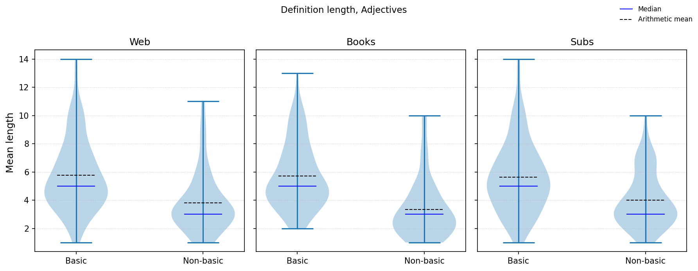
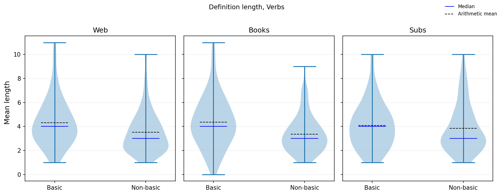
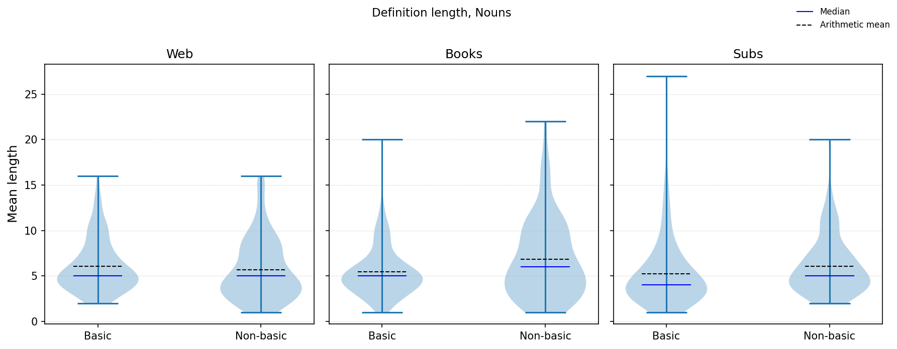
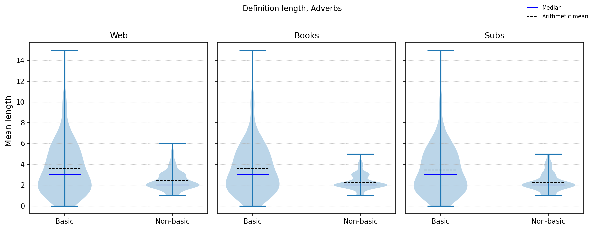
Basic-word definitions for adjectives are consistently longer across all corpora. In Web, the mean difference is +1.95 tokens (5.76 vs 3.81; p<.001; d=0.83), in Books +2.39 (5.72 vs 3.33; p<.001; d=1.08), and in Subtitles +1.64 (5.64 vs 4.00; p<.001; d=0.73). The violins match this pattern: the basic curves are higher with thicker central mass, while non-basic are found lower and have shorter upper tails.
Differences in word definition lengths for basic and non-basic verbs are smaller and corpus-dependent. Web shows a modest increase for basic definitions (+0.80 tokens; 4.32 vs 3.52; p=.0029; d=0.43), Books a medium one (+1.01; 4.37 vs 3.36; p<.001; d=0.54), whereas for Subtitles the difference is not significant (4.09 vs 3.85; p=.39; d=0.12). Correspondingly, the violins for Web/Books show a slight upward shift of the basic distributions (with an overlap nonetheless), but Subtitles exhibits heavy overlap.
For nouns, the situation is different. Web shows no reliable difference (6.08 vs 5.68; p=.369; d=0.13). In Books, non-basic definitions are longer (+1.35; 6.82 vs 5.47; p=.0096; d=-0.37). In Subtitles, the non-basic definitions seem to be longer as well, but p-value of >.05 shows that the difference is not statistically significant (5.26 vs 6.08; p=.098; d=-0.24). The violins echo this: for Books, the non-basic curves have higher centers and fuller upper bodies, whereas for Web and Subtitles they are nearly aligned.
For adverbs, basic definitions are systematically longer in every corpus. For Web, the increase is +1.17 tokens (3.58 vs 2.41; p<.001; d=0.61). For Books, +1.32 (3.59 vs 2.27; p<.001; d=0.73). For Subtitles, +1.20 (3.45 vs 2.25; p<.001; d=0.66). The violins show clear upward shift and a broader middle section for the basic group, with the non-basic group concentrated at shorter lengths.
In general, the results for definition length vary by part of speech: adjectives and adverbs have substantially longer basic-word definitions (medium to large effects), verbs show modest length increases for basic words (not found in Subtitles corpus), and nouns are an exception, with non-basic noun definitions as long or longer (notably in Books corpus).
5.3 Alternarive approach: Wiktionary definitions
It is important to note that definitions from Wiktionary, as well as definitions from WordNet, are far from being perfect. For example, less common words are often defined through their synonyms (“creashak” defined as “The bearberry”) or fixed expressions including words of the same root (“talkily” being defined as “In a talky way”), skewing the results.
5.3.1 Web-based corpus
captured_output = capture_function_output(full_run, top_n, bottom_n, file_name="./data/unigram_freq_web.csv", folder="./results/wiktionary/web/all_100", pos=None, source="wiktionary")
display(HTML(collapsible_content.replace("{captured_output}", captured_output)))Lemmatizing: 100%|██████████| 333333/333333 [00:20<00:00, 15926.14it/s]
Getting top frequency words: 196it [01:52, 1.74it/s]
Getting bottom frequency words: 2%|▏ | 6150/315568 [02:04<1:44:36, 49.30it/s]
Obtaining definitions: 100it [00:43, 2.32it/s]
Obtaining definitions: 100it [00:57, 1.75it/s]Click to view analysis output
Log-10 mean frequency of tokens in definitions Basic=-4.0128 (+-0.5068), nonbasic=-4.7576(+-0.7200) Welch's t-test (unequal variances) t = 8.429, p = 1.21e-14 Cohen's d = 1.197 (positive ⇒ basic > nonbasic) Mann-Whitney U (robustness) U = 8075, p = 1.45e-14 95% CI for (basic - nonbasic) mean difference: [0.5704, 0.9191] Log-10 median frequency of tokens in definitions Basic=-3.9380 (+-0.5428), nonbasic=-4.6395(+-0.8524) Welch's t-test (unequal variances) t = 6.917, p = 9.54e-11 Cohen's d = 0.983 (positive ⇒ basic > nonbasic) Mann-Whitney U (robustness) U = 7374, p = 2.43e-09 95% CI for (basic - nonbasic) mean difference: [0.5013, 0.9017] Length of definition in tokens Basic=6.0100 (+-3.9785), nonbasic=4.7600(+-3.8980) Welch's t-test (unequal variances) t = 2.244, p = 0.0259 Cohen's d = 0.317 (positive ⇒ basic > nonbasic) Mann-Whitney U (robustness) U = 6167, p = 0.00406 95% CI for (basic - nonbasic) mean difference: [0.1516, 2.3484]
5.3.2 Subtitles-based corpus
captured_output = capture_function_output(full_run, top_n, bottom_n, file_name="./data/unigram_freq_subtitles.csv", folder="./results/wiktionary/subtitles/all_100", pos=None, source="wiktionary")
display(HTML(collapsible_content.replace("{captured_output}", captured_output)))Lemmatizing: 100%|██████████| 30000/30000 [00:07<00:00, 4267.74it/s]
Getting top frequency words: 219it [00:56, 3.85it/s]
Getting bottom frequency words: 1%| | 228/26052 [00:51<1:36:54, 4.44it/s]
Obtaining definitions: 100it [00:28, 3.45it/s]
Obtaining definitions: 100it [00:43, 2.32it/s]Click to view analysis output
Log-10 mean frequency of tokens in definitions Basic=-4.2638 (+-0.5501), nonbasic=-4.6249(+-0.5456) Welch's t-test (unequal variances) t = 4.626, p = 6.77e-06 Cohen's d = 0.659 (positive ⇒ basic > nonbasic) Mann-Whitney U (robustness) U = 6795, p = 1.19e-06 95% CI for (basic - nonbasic) mean difference: [0.2072, 0.5151] Log-10 median frequency of tokens in definitions Basic=-4.2311 (+-0.6002), nonbasic=-4.6247(+-0.5896) Welch's t-test (unequal variances) t = 4.643, p = 6.29e-06 Cohen's d = 0.662 (positive ⇒ basic > nonbasic) Mann-Whitney U (robustness) U = 6752, p = 2.03e-06 95% CI for (basic - nonbasic) mean difference: [0.2264, 0.5608] Length of definition in tokens Basic=4.8000 (+-3.2287), nonbasic=5.8300(+-4.1635) Welch's t-test (unequal variances) t = -1.955, p = 0.0521 Cohen's d = -0.276 (positive ⇒ basic > nonbasic) Mann-Whitney U (robustness) U = 4188, p = 0.0461 95% CI for (basic - nonbasic) mean difference: [-2.0694, 0.0094]
5.3.3 Book-based corpus
captured_output = capture_function_output(full_run, top_n, bottom_n, file_name="./data/unigram_freq_books.txt", folder="./results/wiktionary/books/all_100", pos=None, source="wiktionary")
display(HTML(collapsible_content.replace("{captured_output}", captured_output)))Lemmatizing: 100%|██████████| 397430/397430 [00:24<00:00, 16515.26it/s]
Getting top frequency words: 215it [00:48, 4.42it/s]
Getting bottom frequency words: 8%|▊ | 27307/360685 [02:33<31:11, 178.15it/s]
Obtaining definitions: 100it [00:28, 3.47it/s]
Obtaining definitions: 100it [00:47, 2.12it/s]Click to view analysis output
Log-10 mean frequency of tokens in definitions Basic=-3.9472 (+-0.4301), nonbasic=-5.3351(+-1.3476) Welch's t-test (unequal variances) t = 9.722, p = 1.05e-16 Cohen's d = 1.393 (positive ⇒ basic > nonbasic) Mann-Whitney U (robustness) U = 8656, p = 1.21e-20 95% CI for (basic - nonbasic) mean difference: [1.1052, 1.6707] Log-10 median frequency of tokens in definitions Basic=-3.8802 (+-0.4540), nonbasic=-5.2760(+-1.4125) Welch's t-test (unequal variances) t = 9.322, p = 8.92e-16 Cohen's d = 1.336 (positive ⇒ basic > nonbasic) Mann-Whitney U (robustness) U = 8394, p = 4.43e-18 95% CI for (basic - nonbasic) mean difference: [1.0993, 1.6924] Length of definition in tokens Basic=5.9300 (+-4.3514), nonbasic=3.0500(+-2.3884) Welch's t-test (unequal variances) t = 5.802, p = 3.62e-08 Cohen's d = 0.821 (positive ⇒ basic > nonbasic) Mann-Whitney U (robustness) U = 7418, p = 2.37e-09 95% CI for (basic - nonbasic) mean difference: [1.8994, 3.8606]
5.3.4 Analysis: token frequencies in definitions
plot_violin_pairs(
pairs=[
("./results/wiktionary/web/all_100/top100_defs_with_freq.csv", f"./results/wiktionary/web/all_100/bottom100_defs_with_freq.csv"),
("./results/wiktionary/books/all_100/top100_defs_with_freq.csv", f"./results/wiktionary/books/all_100/bottom100_defs_with_freq.csv"),
("./results/wiktionary/subtitles/all_100/top100_defs_with_freq.csv", f"./results/wiktionary/subtitles/all_100/bottom100_defs_with_freq.csv"),
],
value_col="mean_log_freq",
pair_labels=["Web","Books","Subs"],
transform="yes",
yscale="log",
title="Token frequencies per million"
)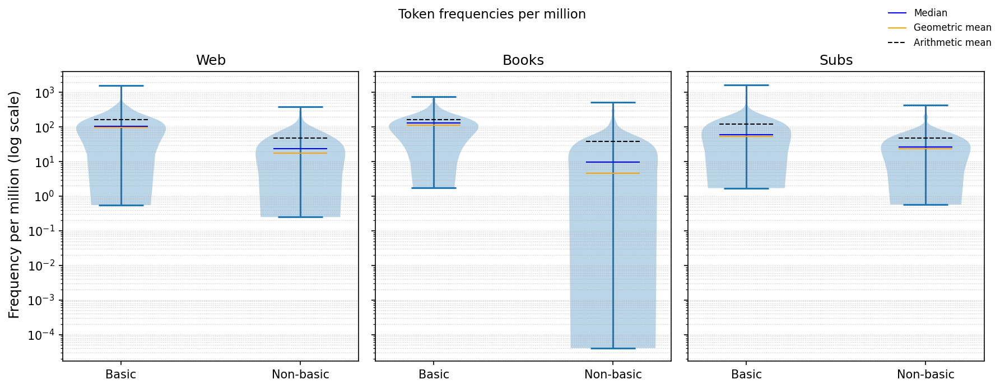
As for Wiktionary definition data, definitions of basic words also use higher-frequency vocabulary than those of non-basic words, confirming that more fundamental concepts are explained using simpler and more common vocabulary.
In the Web corpus, the mean log-frequency difference of words used in definitions is 0.74 (−4.01 vs −4.76; p<.001; d=1.20; 95 % CI [0.57, 0.92]), corresponding to roughly 97 vs 17 occurrences per million tokens (~5.7× more frequent wording). For Subtitles, the difference is smaller but still statistically significant: 0.36 (−4.26 vs −4.62; p<.001; d=0.66; 95 % CI [0.21, 0.52]), corresponding to ~55 vs 24 per million, or ~2.3× more frequent vocabulary. In Books, the contrast is most noticeable: 1.39 (−3.95 vs −5.34; p<.001; d=1.39; 95 % CI [1.11, 1.67]), ~113 vs 4.6 per million, or ~25× more frequent language. The effect sizes are large for Web and Books (d>.8) and moderate for Subtitles (.5>d>.2).
The violin plots in Figure visualize the same trend: for every corpus, the basic distributions are shifted upward on the log scale (compared to the non-basic ones), with higher medians and geometric means than their non-basic counterparts. The differences in distribution shape are (again) especially notable for the Books corpus, where non-basic words show a broad, heavy lower tail of rare, specialized vocabulary.
Yet again, the data contradicts the alleged “basic-word paradox”: in fact, definitions of conceptually simple words are not lexically complex but rather rely on frequent, high-utility words typical of defining vocabularies.
5.3.5 Analysis: length of definitions
plot_violin_pairs(
pairs=[
("./results/wiktionary/web/all_100/top100_defs_with_freq.csv", f"./results/wiktionary/web/all_100/bottom100_defs_with_freq.csv"),
("./results/wiktionary/books/all_100/top100_defs_with_freq.csv", f"./results/wiktionary/books/all_100/bottom100_defs_with_freq.csv"),
("./results/wiktionary/subtitles/all_100/top100_defs_with_freq.csv", f"./results/wiktionary/subtitles/all_100/bottom100_defs_with_freq.csv"),
],
value_col="len_tokens",
pair_labels=["Web","Books","Subs"],
transform=None,
yscale="linear",
title="Definition length"
)As for definition length, basic words tend to have slightly longer definitions, but the effect varies by domain. In the Web corpus, the mean length is 6.01 vs 4.76 tokens (p=.026; d=0.32; 95 % CI [0.15, 2.35]), suggesting modestly longer and more elaborated phrasing for basic items. The effect is much stronger in Books, where definitions average 5.93 vs 3.05 tokens (p<.001; d=0.82; 95 % CI [1.90, 3.86])—a large difference of nearly two tokens. In Subtitles, the direction reverses slightly (4.80 vs 5.83; p=.052; d=−0.28; 95 % CI [−2.07, 0.01]), but the effect is marginal and small in magnitude. Together, these results indicate that while definitional wording for basic terms is lexically simpler (cf. Section X.X), it can also be somewhat more expansive in length—particularly in written corpora like Books, where definitions may include brief usage clarifications or additional paraphrases.
The violin plots in visualize this pattern. In both Web and Books, the basic distributions are centered slightly higher, with longer medians (blue lines) and broader upper ranges, while non-basic definitions cluster around shorter spans. The Subtitles corpus shows wider overlap and greater dispersion, probably due to its more conversational register (there are fewer technical terms that can be defined using words of the same family in set idiomatic expressions, such as “cylindricalness” being defined as “The state of being cylindrical” in the Books dataset).
Overall, the results suggest that basic terms, though explained through simpler words, often receive slightly loner definitions, probably due to their broader conceptual scope.
6 Conclusion and future work
In this project, I investigated whether basic words – in this case, defined by higher corpus frequency – are easier to define by studying the length and lexical simplicity of their dictionary definitions.
Across both WordNet and Wiktionary, the results for definitional vocabulary frequency show a consistent pattern: definitions of basic words systematically use more frequent, (i.e. basic) words than those of “non-basic” ones. This pattern holds across all corpora and parts of speech, with especially strong effects in the written corpora of Web and Books and more moderate ones in the spoken corpus of Subtitles. The finding directly contradicts the alleged “Basic-Word Paradox” and supports the view that fundamental concepts are explained using the high-frequency core lexicon.
Differences in definition length were modest and dependent on corpus and part of speech. In WordNet, basic terms were slightly longer in Web and Books but not in Subtitles, with clear length increases limited to adjectives and adverbs, modest for verbs, and reversed for nouns. In Wiktionary, definitions of basic words were also significantly longer in Web and Books but not in Subtitles, where the difference was small and nonsignificant. Overall, definition length shows no uniform trend: while basic words tend to have marginally longer definitions in written corpora, the effect is weak and variable.
Then I can answer the suggested research question as follows: Frequency-defined “basic” words are easier to define lexically, as their definitions consistently rely on higher-frequency, more common vocabulary across corpora and parts of speech. However, this simplicity in wording is not directly related to shorter definitions – their length varies across datasets and grammatical categories, with definitions for basic words being unexpectedly longer in many cases.
In the future, my analysis could be expanded on by: 1. Using a larger and more balanced word sample; 2. Including additional lexical resources such as learner dictionaries to test consistency across sources; 3. Taking into account potential polysemanticity of some words (limiting the analysis to the first definition, as I did, seems to be an oversimplification); 4. Examining dictionary data in languages other than English to determine whether the relationship between frequency and definitional simplicity is universally or language-specific.
7 References
Brysbaert, M., Warriner, A. B., & Kuperman, V. (2014). Concreteness ratings for 40,000 English words. Behavior Research Methods, 46 (3), 904–911. https://link.springer.com/article/10.3758/s13428-013-0403-5
Kamiński, M. P. (2021). Defining with simple vocabulary in English dictionaries. Lexicography Studies. https://academic.oup.com/ijl/article/36/2/227/7114903
Mandera, P., Keuleers, E., & Brysbaert, M. (2017). Explaining human performance in psycholinguistic tasks with models of semantic similarity based on prediction and counting: A review and empirical validation. Journal of Memory and Language, 92, 57–78. https://www.sciencedirect.com/science/article/pii/S0749596X16300079
Rosch, E., Mervis, C. B., Gray, W. D., Johnson, D. M., & Boyes-Braem, P. (1976). Basic objects in natural categories. Cognitive Psychology, 8 (3), 382–439. https://www.sciencedirect.com/science/article/pii/001002857690013X
Steyvers, M., & Tenenbaum, J. B. (2005). The large-scale structure of semantic networks: Statistical analyses and a model of semantic growth. Cognitive Science, 29 (1), 41–78. https://pubmed.ncbi.nlm.nih.gov/21702767/
Swadesh, M. (1952). Lexico-statistic dating of prehistoric ethnic contacts: with special reference to North American Indians and Eskimos. Proceedings of the American Philosophical Society, 96 (4), 452–463. https://www.jstor.org/stable/3143802